Databanka testových úloh z českých reálií
Občanský základ
Zvyky a tradice
Doprava
- Co nepatří do městské hromadné dopravy?
- A) Taxi.
- B) Metro.
- C) Autobus.
- D) Tramvaj.
- Správná odpověď?Správná odpověď: A
- Datum aktualizace testové úlohyDatum aktualizace testové úlohy: 20. 11. 2013
- Paní Svobodová jezdí na kole do práce. Ve které situaci porušuje pravidla silničního provozu?
- A) Jede na kole po chodníku.
- B) Jede na kole po pravé straně silnice.
- C) Jede na kole v řadě za svou kolegyní.
- D) Jede na kole a dává rukou znamení o změně směru jízdy.
- Správná odpověď?Správná odpověď: A
- Datum aktualizace testové úlohyDatum aktualizace testové úlohy: 8. 12. 2014
- Pan Svoboda má řidičský průkaz skupiny B. Který typ vozidel může pan Svoboda řídit?
- A) Tramvaje.
- B) Autobusy.
- C) Osobní vozidla.
- D) Nákladní automobily.
- Správná odpověď?Správná odpověď: C
- Datum aktualizace testové úlohyDatum aktualizace testové úlohy: 20. 11. 2013
- Kolik piv s obsahem alkoholu může vypít řidič podle zákona při řízení auta v Česku?
- A) Tři.
- B) Dvě.
- C) Jedno.
- D) Žádné.
- Správná odpověď?Správná odpověď: D
- Datum aktualizace testové úlohyDatum aktualizace testové úlohy: 8. 12. 2014
- Jaká je nejvyšší dovolená rychlost pro motorová vozidla na silnici ve městě?
- A) 30 km/h.
- B) 50 km/h.
- C) 90 km/h.
- D) 110 km/h.
- Správná odpověď?Správná odpověď: B
- Datum aktualizace testové úlohyDatum aktualizace testové úlohy: 8. 12. 2014
- Jak se nazývá povinné pojištění automobilu?
- A) Povinné ručení.
- B) Životní pojištění.
- C) Úrazové pojištění.
- D) Cestovní pojištění.
- Správná odpověď?Správná odpověď: A
- Datum aktualizace testové úlohyDatum aktualizace testové úlohy: 8. 12. 2014
- Kterou z těchto činností provádí revizor v prostředcích městské hromadné dopravy?
- A) Prodává cestujícím jízdní doklady.
- B) Kontroluje jízdní doklady cestujících.
- C) Opravuje prostředky městské hromadné dopravy.
- D) Zatýká cestující, kteří nemají platný jízdní doklady.
- Správná odpověď?Správná odpověď: B
- Datum aktualizace testové úlohyDatum aktualizace testové úlohy: 28. 4. 2014
- Jak musí cestovat v autě dítě menší než 150 cm?
- A) Dítě musí sedět na klíně dospělé osoby.
- B) Dítě musí sedět volně na zadním sedadle.
- C) Dítě musí sedět volně na předním sedadle.
- D) Dítě musí sedět připoutané v dětské autosedačce.
- Správná odpověď?Správná odpověď: D
- Datum aktualizace testové úlohyDatum aktualizace testové úlohy: 8. 12. 2014
- Revizor v tramvaji zjistil, že pan Svoboda nemá jízdenku. Který trest čeká pana Svobodu?
- A) Žádný.
- B) Vězení.
- C) Pokuta.
- D) Veřejné práce.
- Správná odpověď?Správná odpověď: C
- Datum aktualizace testové úlohyDatum aktualizace testové úlohy: 8. 12. 2014
- Která z uvedených věcí patří k povinné výbavě osobního automobilu?
- A) Rádio.
- B) Lékárnička.
- C) Destilovaná voda.
- D) Nádoba na benzin.
- Správná odpověď?Správná odpověď: B
- Datum aktualizace testové úlohyDatum aktualizace testové úlohy: 8. 12. 2014
Zdravotní a záchranný systém
- Paní Svobodové ukradli auto. Na kterém telefonním čísle krádež oznámí?
- A) 111.
- B) 150.
- C) 155.
- D) 158.
- Správná odpověď?Správná odpověď: D
- Datum aktualizace testové úlohyDatum aktualizace testové úlohy: 20. 11. 2013
- Které telefonní číslo má zdravotnická záchranná služba?
- A) 150.
- B) 155.
- C) 156.
- D) 158.
- Správná odpověď?Správná odpověď: B
- Datum aktualizace testové úlohyDatum aktualizace testové úlohy: 20. 11. 2013
- Pan Svoboda je občanem České republiky a jde na prohlídku k lékaři. Který doklad musí ukázat?
- A) Průkaz pojištěnce.
- B) Občanský průkaz.
- C) Řidičský průkaz.
- D) Rodný list.
- Správná odpověď?Správná odpověď: A
- Datum aktualizace testové úlohyDatum aktualizace testové úlohy: 8. 12. 2014
- Která instituce nepatří do integrovaného záchranného systému?
- A) Vláda České republiky.
- B) Policie České republiky.
- C) Hasičský záchranný sbor.
- D) Zdravotnická záchranná služba.
- Správná odpověď?Správná odpověď: A
- Datum aktualizace testové úlohyDatum aktualizace testové úlohy: 8. 12. 2014
- Které telefonní číslo má jednotný záchranný systém (hasiči, policie, zdravotnická záchranná služba) v celé Evropě?
- A) 112.
- B) 150.
- C) 911.
- D) 999.
- Správná odpověď?Správná odpověď: A
- Datum aktualizace testové úlohyDatum aktualizace testové úlohy: 20. 11. 2013
- Která součást záchranného systému má telefonní číslo 150?
- A) Městská policie.
- B) Policie České republiky.
- C) Hasičský záchranný sbor.
- D) Zdravotnická záchranná služba.
- Správná odpověď?Správná odpověď: C
- Datum aktualizace testové úlohyDatum aktualizace testové úlohy: 8. 12. 2014
- Pan Novák viděl dopravní nehodu. Chce volat Policii České republiky. Které telefonní číslo použije?
- A) 150.
- B) 155.
- C) 156.
- D) 158.
- Správná odpověď?Správná odpověď: D
- Datum aktualizace testové úlohyDatum aktualizace testové úlohy: 20. 11. 2013
- Slečna Nováková je občankou České republiky a je jí 20 let. Studuje vysokou školu v denním studiu. Kdo platí její zdravotní pojištění?
- A) Stát.
- B) Rodiče.
- C) Vysoká škola.
- D) Platí si jej sama.
- Správná odpověď?Správná odpověď: A
- Datum aktualizace testové úlohyDatum aktualizace testové úlohy: 8. 12. 2014
- Pan Nováček je občanem České republiky. Je v důchodu a nepracuje. Kdo platí jeho povinné zdravotní pojištění?
- A) Stát.
- B) Platí si jej sám.
- C) Děti pana Nováčka.
- D) Bývalý zaměstnavatel.
- Správná odpověď?Správná odpověď: A
- Datum aktualizace testové úlohyDatum aktualizace testové úlohy: 8. 12. 2014
- Manželé Svobodovi a jejich děti ve věku 7 a 10 let jsou občany České republiky. Kdo platí za děti zdravotní pojištění?
- A) Stát.
- B) Obec.
- C) Škola.
- D) Rodiče.
- Správná odpověď?Správná odpověď: A
- Datum aktualizace testové úlohyDatum aktualizace testové úlohy: 8. 12. 2014
Vzdělávání
- Ve kterém z těchto měsíců začíná na základních školách v Česku školní rok?
- A) V září.
- B) V lednu.
- C) V březnu.
- D) V červenci.
- Správná odpověď?Správná odpověď: A
- Datum aktualizace testové úlohyDatum aktualizace testové úlohy: 28. 4. 2014
- Která z těchto institucí poskytuje předškolní vzdělávání dětí?
- A) Gymnázium.
- B) Mateřská škola.
- C) Střední odborná škola.
- D) Základní umělecká škola.
- Správná odpověď?Správná odpověď: B
- Datum aktualizace testové úlohyDatum aktualizace testové úlohy: 8. 12. 2014
- Kolik let trvá v České republice povinná školní docházka?
- A) 5 let.
- B) 9 let.
- C) 12 let.
- D) 15 let.
- Správná odpověď?Správná odpověď: B
- Datum aktualizace testové úlohyDatum aktualizace testové úlohy: 20. 11. 2013
- Kdy mají žáci základních a středních škol v České republice hlavní prázdniny?
- A) V září a v říjnu.
- B) V únoru a v březnu.
- C) V dubnu a v květnu.
- D) V červenci a v srpnu.
- Správná odpověď?Správná odpověď: D
- Datum aktualizace testové úlohyDatum aktualizace testové úlohy: 8. 12. 2014
- Které známky mohou dostat žáci v českých základních školách na vysvědčení?
- A) Známky od 1 do 5, nejlepší je 5.
- B) Známky od 1 do 5, nejhorší je 5.
- C) Známky od A do F, nejlepší je A.
- D) Známky od 1 do 10, nejhorší je 10.
- Správná odpověď?Správná odpověď: B
- Datum aktualizace testové úlohyDatum aktualizace testové úlohy: 8. 12. 2014
- Syn paní Svobodové chodí do deváté třídy. Kterou školu navštěvuje?
- A) Střední školu.
- B) Základní školu.
- C) Vysokou školu.
- D) Mateřskou školu.
- Správná odpověď?Správná odpověď: B
- Datum aktualizace testové úlohyDatum aktualizace testové úlohy: 8. 12. 2014
- Kdo v České republice určuje, kam bude dítě chodit na základní školu?
- A) Rodiče.
- B) Obecní úřad.
- C) Sociální správa.
- D) Ministerstvo školství.
- Správná odpověď?Správná odpověď: A
- Datum aktualizace testové úlohyDatum aktualizace testové úlohy: 20. 11. 2013
- Ve kterém z těchto měsíců obyčejně dostávají žáci na základních školách v Česku vysvědčení?
- A) V prosinci.
- B) V březnu.
- C) V červnu.
- D) V září.
- Správná odpověď?Správná odpověď: C
- Datum aktualizace testové úlohyDatum aktualizace testové úlohy: 8. 12. 2014
- Jak se jmenují střední školy, které poskytují všeobecné vzdělání?
- A) Gymnázia.
- B) Obchodní akademie.
- C) Střední odborná učiliště.
- D) Střední průmyslové školy.
- Správná odpověď?Správná odpověď: A
- Datum aktualizace testové úlohyDatum aktualizace testové úlohy: 20. 11. 2013
- Na které z těchto škol se skládá maturitní zkouška?
- A) Na střední škole.
- B) Na vysoké škole.
- C) Na základní škole.
- D) Na vyšší odborné škole.
- Správná odpověď?Správná odpověď: A
- Datum aktualizace testové úlohyDatum aktualizace testové úlohy: 8. 12. 2014
Politický systém
- Které z těchto zvířat je na malém státním znaku České republiky?
- A) Lev.
- B) Kůň.
- C) Ryba.
- D) Medvěd.
- Správná odpověď?Správná odpověď: A
- Datum aktualizace testové úlohyDatum aktualizace testové úlohy: 8. 12. 2014
- Co patří mezi české státní symboly?
- A) Strom lípa.
- B) Ústava ČR.
- C) Velký státní znak.
- D) Královská koruna.
- Správná odpověď?Správná odpověď: C
- Datum aktualizace testové úlohyDatum aktualizace testové úlohy: 8. 12. 2014
- Které z těchto barev jsou státními barvami České republiky?
- A) Bílá, černá, modrá.
- B) Bílá, černá, červená.
- C) Bílá, červená, modrá.
- D) Červená, modrá, černá.
- Správná odpověď?Správná odpověď: C
- Datum aktualizace testové úlohyDatum aktualizace testové úlohy: 20. 11. 2013
- Která z těchto právních norem má v České republice nejvyšší právní sílu?
- A) Občanský zákoník.
- B) Trestní zákoník.
- C) Zákoník práce.
- D) Ústava.
- Správná odpověď?Správná odpověď: D
- Datum aktualizace testové úlohyDatum aktualizace testové úlohy: 8. 12. 2014
- Vlajka Evropské unie má 12 hvězd v kruhu na barevném pozadí. Kterou barvu má pozadí této vlajky?
- A) Bílou.
- B) Modrou.
- C) Zelenou.
- D) Červenou.
- Správná odpověď?Správná odpověď: B
- Datum aktualizace testové úlohyDatum aktualizace testové úlohy: 8. 12. 2014
- Který z těchto textů je začátek české státní hymny?
- A) Nad Tatrou se blýská.
- B) Kde domov můj, kde domov můj?
- C) Ať mír dál zůstává s touto krajinou.
- D) Svatý Václave, vévodo české země.
- Správná odpověď?Správná odpověď: B
- Datum aktualizace testové úlohyDatum aktualizace testové úlohy: 28. 4. 2014
- Každý má právo vlastnit majetek. Který z dokumentů zaručuje toto právo?
- A) Rodný list.
- B) Daňové přiznání.
- C) Obchodní zákoník.
- D) Listina základních práv a svobod.
- Správná odpověď?Správná odpověď: D
- Datum aktualizace testové úlohyDatum aktualizace testové úlohy: 8. 12. 2014
- Které barvy jsou na české státní vlajce?
- A) Bílá, zelená, modrá.
- B) Bílá, červená, modrá.
- C) Bílá, zelená, červená.
- D) Červená, modrá, zelená.
- Správná odpověď?Správná odpověď: B
- Datum aktualizace testové úlohyDatum aktualizace testové úlohy: 8. 12. 2014
- Velký státní znak České republiky se skládá ze čtyř částí. Které území symbolizuje levá horní část?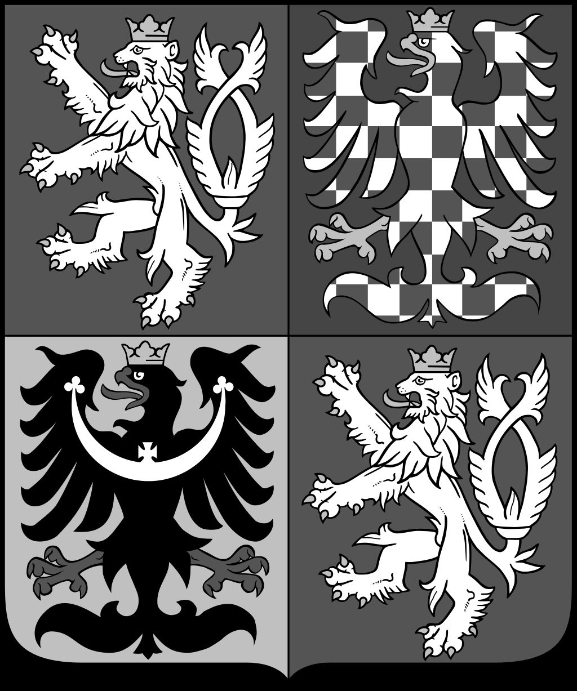
- A) Čechy.
- B) Slezsko.
- C) Moravu.
- D) Slovensko.
- Správná odpověď?Správná odpověď: A
- Zobrazit citaceCitace obrazového materiálu:
[online].[cit. 2013-08-12]. Dostupný pod licencí Public domain na WWW: <http://commons.wikimedia.org/wiki/File:Coat_of_arms_of_the_Czech_Republic.svg> - Datum aktualizace testové úlohyDatum aktualizace testové úlohy: 20. 11. 2013
- Který z těchto státních symbolů České republiky je na obrázku?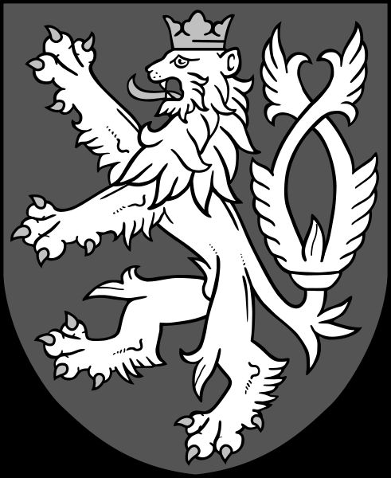
- A) Státní vlajka.
- B) Malý státní znak.
- C) Velký státní znak.
- D) Vlajka prezidenta.
- Správná odpověď?Správná odpověď: B
- Zobrazit citaceCitace obrazového materiálu:
[online]. [cit. 2013-09-27]. Dostupný pod licencí Public domain na WWW: <http://commons.wikimedia.org/wiki/File:Small_coat_of_arms_of_the_Czech_Republic.svg> - Datum aktualizace testové úlohyDatum aktualizace testové úlohy: 20. 11. 2013
Zákonodárná a výkonná moc
- Slečna Novotná chce navštívit schůzi Poslanecké sněmovny. Který státní úřad navštíví?
- A) Parlament ČR.
- B) Úřad vlády ČR.
- C) Ústavní soud ČR.
- D) Ministerstvo spravedlnosti ČR.
- Správná odpověď?Správná odpověď: A
- Datum aktualizace testové úlohyDatum aktualizace testové úlohy: 20. 11. 2013
- Pan Novák se stal senátorem. Kolik let může být nejdéle senátorem v jednom volebním období?
- A) 2 roky.
- B) 4 roky.
- C) 6 let.
- D) 8 let.
- Správná odpověď?Správná odpověď: C
- Datum aktualizace testové úlohyDatum aktualizace testové úlohy: 8. 12. 2014
- Jak se jmenuje orgán, který se skládá z předsedy vlády a ministrů?
- A) Senát ČR.
- B) Vláda ČR.
- C) Parlament ČR.
- D) Poslanecká sněmovna ČR.
- Správná odpověď?Správná odpověď: B
- Datum aktualizace testové úlohyDatum aktualizace testové úlohy:
- Česká republika je demokratickou parlamentní republikou. Kdo je nejvyšším představitelem státu?
- A) Předseda vlády.
- B) Předseda Senátu.
- C) Ministr zahraničí.
- D) Prezident republiky.
- Správná odpověď?Správná odpověď: D
- Datum aktualizace testové úlohyDatum aktualizace testové úlohy: 8. 12. 2014
- Které komory tvoří Parlament České republiky?
- A) Senát a vláda.
- B) Senát a ministerstva.
- C) Poslanecká sněmovna a vláda.
- D) Poslanecká sněmovna a Senát.
- Správná odpověď?Správná odpověď: D
- Datum aktualizace testové úlohyDatum aktualizace testové úlohy: 20. 11. 2013
- Které ministerstvo uděluje státní občanství České republiky?
- A) Ministerstvo práce a sociálních věcí.
- B) Ministerstvo zahraničních věcí.
- C) Ministerstvo financí.
- D) Ministerstvo vnitra.
- Správná odpověď?Správná odpověď: D
- Datum aktualizace testové úlohyDatum aktualizace testové úlohy: 8. 12. 2014
- Kdo se může stát senátorem České republiky?
- A) Český občan starší 18 let.
- B) Český občan starší 21 let.
- C) Český občan starší 30 let.
- D) Český občan starší 40 let.
- Správná odpověď?Správná odpověď: D
- Datum aktualizace testové úlohyDatum aktualizace testové úlohy: 8. 12. 2014
- Pan Svoboda chce navštívit schůzi Senátu. Který státní úřad navštíví?
- A) Parlament ČR.
- B) Úřad vlády ČR.
- C) Nejvyšší kontrolní úřad ČR.
- D) Ministerstvo spravedlnosti ČR.
- Správná odpověď?Správná odpověď: A
- Datum aktualizace testové úlohyDatum aktualizace testové úlohy: 28. 4. 2014
- Kdo schvaluje zákony v České republice?
- A) Vláda ČR.
- B) Ústavní soud.
- C) Parlament ČR.
- D) Všichni občané.
- Správná odpověď?Správná odpověď: C
- Datum aktualizace testové úlohyDatum aktualizace testové úlohy: 8. 12. 2014
- Kdo řídí vládu v České republice?
- A) Starosta obce.
- B) Předseda vlády.
- C) Předseda Senátu.
- D) Prezident republiky.
- Správná odpověď?Správná odpověď: B
- Datum aktualizace testové úlohyDatum aktualizace testové úlohy: 20. 11. 2013
Soudní moc a ochrana občanů
- Pan Novotný určuje výši trestu za trestné činy. Kterou funkci vykonává?
- A) Funkci soudce.
- B) Funkci starosty.
- C) Funkci ministra.
- D) Funkci prezidenta.
- Správná odpověď?Správná odpověď: A
- Datum aktualizace testové úlohyDatum aktualizace testové úlohy: 8. 12. 2014
- Paní Svobodová způsobila dopravní nehodu. Kdo ji může obhajovat u soudu?
- A) Notář.
- B) Soudce.
- C) Advokát.
- D) Exekutor.
- Správná odpověď?Správná odpověď: C
- Datum aktualizace testové úlohyDatum aktualizace testové úlohy: 8. 12. 2014
- Který z těchto soudů rozhoduje o zrušení zákonů, které neodpovídají Ústavě České republiky?
- A) Vrchní soud.
- B) Ústavní soud.
- C) Krajský soud.
- D) Nejvyšší soud.
- Správná odpověď?Správná odpověď: B
- Datum aktualizace testové úlohyDatum aktualizace testové úlohy: 8. 12. 2014
- Kdo jmenuje v České republice soudce?
- A) Ministr vnitra.
- B) Předseda vlády.
- C) Prezident republiky.
- D) Ministr spravedlnosti.
- Správná odpověď?Správná odpověď: C
- Datum aktualizace testové úlohyDatum aktualizace testové úlohy: 20. 11. 2013
- Pan Novotný pracuje jako advokát. Kterou z těchto činností může dělat?
- A) Určovat výši trestu za trestné činy.
- B) Poskytovat placené právní služby.
- C) Vydávat příkaz k zatčení.
- D) Zahajovat trestní stíhání.
- Správná odpověď?Správná odpověď: B
- Datum aktualizace testové úlohyDatum aktualizace testové úlohy: 28. 4. 2014
- Co je úkolem exekutora?
- A) Vymáhat dluhy.
- B) Zastupovat u soudu.
- C) Vyhlašovat rozsudky.
- D) Vydávat příkazy k zatčení.
- Správná odpověď?Správná odpověď: A
- Datum aktualizace testové úlohyDatum aktualizace testové úlohy: 8. 12. 2014
- Co je úkolem státního zástupce?
- A) Vymáhat peníze.
- B) Vyhlašovat rozsudky.
- C) Zabavovat majetek dlužníkům.
- D) Podávat obžalobu proti obviněnému.
- Správná odpověď?Správná odpověď: D
- Datum aktualizace testové úlohyDatum aktualizace testové úlohy: 8. 12. 2014
- Kdo je ombudsman?
- A) Nejvyšší soudce.
- B) Policejní prezident.
- C) Ministr spravedlnosti.
- D) Veřejný ochránce práv.
- Správná odpověď?Správná odpověď: D
- Datum aktualizace testové úlohyDatum aktualizace testové úlohy: 20. 11. 2013
- Pan Svoboda chce sepsat závěť jako veřejnou listinu. Ke komu půjde?
- A) K notáři.
- B) K soudci.
- C) K exekutorovi.
- D) Ke státnímu zástupci.
- Správná odpověď?Správná odpověď: A
- Datum aktualizace testové úlohyDatum aktualizace testové úlohy: 8. 12. 2014
- Kdo může v České republice vydat příkaz k zatčení?
- A) Notář
- B) Soudce.
- C) Advokát.
- D) Exekutor.
- Správná odpověď?Správná odpověď: B
- Datum aktualizace testové úlohyDatum aktualizace testové úlohy: 28. 4. 2014
Volby
- Do které instituce Evropské unie volí čeští občané své zástupce?
- A) Do Rady Evropy.
- B) Do Evropské komise.
- C) Do Evropského parlamentu.
- D) Do Evropského soudu pro lidská práva.
- Správná odpověď?Správná odpověď: C
- Datum aktualizace testové úlohyDatum aktualizace testové úlohy: 20. 11. 2013
- Jak často se konají řádné volby do obecního zastupitelstva?
- A) Jednou za dva roky.
- B) Jednou za tři roky.
- C) Jednou za čtyři roky.
- D) Jednou za pět let.
- Správná odpověď?Správná odpověď: C
- Datum aktualizace testové úlohyDatum aktualizace testové úlohy: 8. 12. 2014
- Kdo je nejvyšším představitelem obce?
- A) Ministr.
- B) Soudce.
- C) Starosta.
- D) Prezident.
- Správná odpověď?Správná odpověď: C
- Datum aktualizace testové úlohyDatum aktualizace testové úlohy: 20. 11. 2013
- Kdo je nejvyšším představitelem kraje?
- A) Senátor.
- B) Starosta.
- C) Hejtman.
- D) Poslanec.
- Správná odpověď?Správná odpověď: C
- Datum aktualizace testové úlohyDatum aktualizace testové úlohy: 20. 11. 2013
- Kdo je nejvyšším představitelem hlavního města Prahy?
- A) Ministr.
- B) Primátor.
- C) Hejtman.
- D) Prezident.
- Správná odpověď?Správná odpověď: B
- Datum aktualizace testové úlohyDatum aktualizace testové úlohy: 20. 11. 2013
- Do které instituce nemohou občané České republiky volit své zástupce?
- A) Do vlády.
- B) Do Senátu.
- C) Do Poslanecké sněmovny.
- D) Do obecního zastupitelstva.
- Správná odpověď?Správná odpověď: A
- Datum aktualizace testové úlohyDatum aktualizace testové úlohy: 20. 11. 2013
- Občané hlasovali o tom, jestli jejich obecní úřad postaví v obci novou radnici. Jak se jmenuje toto hlasování občanů?
- A) Obecní volby.
- B) Místní referendum.
- C) Dotazování občanů.
- D) Předvolební průzkum.
- Správná odpověď?Správná odpověď: B
- Datum aktualizace testové úlohyDatum aktualizace testové úlohy: 8. 12. 2014
- Kterou z těchto podmínek musí splnit volič pro účast v obecních volbách?
- A) Musí v obci podnikat.
- B) Musí se v obci narodit.
- C) Musí mít v obci zaměstnání.
- D) Musí mít v obci trvalý pobyt.
- Správná odpověď?Správná odpověď: D
- Datum aktualizace testové úlohyDatum aktualizace testové úlohy: 20. 11. 2013
- Kdo volí prezidenta České republiky?
- A) Senát.
- B) Vláda.
- C) Občané.
- D) Parlament.
- Správná odpověď?Správná odpověď: C
- Datum aktualizace testové úlohyDatum aktualizace testové úlohy: 20. 11. 2013
- Od kolika let se může občan České republiky účastnit voleb jako volič?
- A) Od 15 let.
- B) Od 16 let.
- C) Od 18 let.
- D) Od 21 let.
- Správná odpověď?Správná odpověď: C
- Datum aktualizace testové úlohyDatum aktualizace testové úlohy: 20. 11. 2013
Základní právní pojmy, správní a trestní právo
- Která z těchto vět o státním občanství České republiky je pravdivá?
- A) Státní občanství uděluje ministerstvo zahraničních věcí.
- B) Státní občanství získá každý, kdo se v České republice narodí.
- C) Žádost o udělení státního občanství České republiky se musí podat osobně.
- D) O udělení státního občanství se musí rozhodnout do 30 dnů od podání žádosti.
- Správná odpověď?Správná odpověď: C
- Datum aktualizace testové úlohyDatum aktualizace testové úlohy: 8. 12. 2014
- Kde může paní Svobodová vidět tuto informační tabuli?
INFORMAČNÍ TABULE Kancelář č. 1 Starosta Kancelář č. 2 Tajemník Kancelář č. 3 Matrika Kancelář č. 4 Přestupky - A) U soudu.
- B) Na úřadu práce.
- C) Na obecním úřadu.
- D) Na ministerstvu vnitra.
- Správná odpověď?Správná odpověď: C
- Datum aktualizace testové úlohyDatum aktualizace testové úlohy: 8. 12. 2014
- Kolik míst trvalého pobytu si může nechat občan České republiky zapsat do občanského průkazu?
- A) Jedno.
- B) Dvě.
- C) Tři.
- D) Čtyři.
- Správná odpověď?Správná odpověď: A
- Datum aktualizace testové úlohyDatum aktualizace testové úlohy: 8. 12. 2014
- Který z těchto trestů je nejvyšším trestem v České republice?
- A) Doživotí.
- B) Trest smrti.
- C) Trest odnětí svobody na 20 let.
- D) Trest odnětí svobody na 30 let.
- Správná odpověď?Správná odpověď: A
- Datum aktualizace testové úlohyDatum aktualizace testové úlohy: 8. 12. 2014
- Které chování je trestným činem?
- A) Pan Novák způsobil dopravní nehodu, nepomohl zraněnému řidiči a od nehody ujel.
- B) Slečna Svobodová nezaplatila parkovné na placeném parkovišti.
- C) Paní Novotná neměla při cestě tramvají platnou jízdenku.
- D) Pan Svoboda u sebe neměl občanský průkaz.
- Správná odpověď?Správná odpověď: A
- Datum aktualizace testové úlohyDatum aktualizace testové úlohy: 8. 12. 2014
- Pan Novotný je občanem České republiky a ztratil cestovní pas. Kde může požádat o nový pas?
- A) Na obecním úřadu.
- B) U okresního soudu.
- C) Na cizinecké policii.
- D) Na ministerstvu zahraničních věcí.
- Správná odpověď?Správná odpověď: A
- Datum aktualizace testové úlohyDatum aktualizace testové úlohy: 8. 12. 2014
- Který z těchto úřadů může vydat potvrzení, že občan nemá záznam o trestu?
- A) Ministerstvo vnitra.
- B) Rejstřík trestů.
- C) Finanční úřad.
- D) Krajský soud.
- Správná odpověď?Správná odpověď: B
- Datum aktualizace testové úlohyDatum aktualizace testové úlohy: 8. 12. 2014
- Který z těchto úřadů může ověřit podpis v písemném dokumentu?
- A) Ministerstvo vnitra.
- B) Finanční úřad.
- C) Okresní soud.
- D) Obecní úřad.
- Správná odpověď?Správná odpověď: D
- Datum aktualizace testové úlohyDatum aktualizace testové úlohy: 8. 12. 2014
- Kolky slouží k zaplacení správních poplatků na státních úřadech. Která z těchto institucí prodává kolky?
- A) Česká pošta.
- B) Finanční úřad.
- C) Správa sociálního zabezpečení.
- D) Ministerstvo práce a sociálních věcí.
- Správná odpověď?Správná odpověď: A
- Datum aktualizace testové úlohyDatum aktualizace testové úlohy: 8. 12. 2014
- Které chování je přestupkem, ale není trestným činem?
- A) Krádež 100 000 Kč v bance.
- B) Nezaplacení výživného na dítě.
- C) Krádež zboží v obchodě za 6 000 korun.
- D) Nezaplacení poplatku za odvoz popelnice.
- Správná odpověď?Správná odpověď: D
- Datum aktualizace testové úlohyDatum aktualizace testové úlohy: 8. 12. 2014
Občanské právo
- Paní Svobodové se rozbil nový počítač. Šla jej proto reklamovat. Do kolika dnů musí prodejce vyřídit její reklamaci?
- A) Do 7 dnů.
- B) Do 14 dnů.
- C) Do 30 dnů.
- D) Do 60 dnů.
- Správná odpověď?Správná odpověď: C
- Datum aktualizace testové úlohyDatum aktualizace testové úlohy: 20. 11. 2013
- Slečna Nováková si pronajala byt. Kterou smlouvu uzavřela s majitelem bytu?
- A) Kupní smlouvu.
- B) Nájemní smlouvu.
- C) Pracovní smlouvu.
- D) Přepravní smlouvu.
- Správná odpověď?Správná odpověď: B
- Datum aktualizace testové úlohyDatum aktualizace testové úlohy: 20. 11. 2013
- Které informace zapisuje katastrální úřad?
- A) Informace o příjmech a výdajích firmy.
- B) Informace o osobních automobilech.
- C) Informace o stavbách a pozemcích.
- D) Informace o půjčkách a vkladech.
- Správná odpověď?Správná odpověď: C
- Datum aktualizace testové úlohyDatum aktualizace testové úlohy: 20. 11. 2013
- Který majetek se nezapisuje do katastru nemovitostí?
- A) Les.
- B) Pozemek.
- C) Automobil.
- D) Rodinný dům.
- Správná odpověď?Správná odpověď: C
- Datum aktualizace testové úlohyDatum aktualizace testové úlohy: 8. 12. 2014
- Pan Svoboda nemá rodinu. V případě smrti chce dát svůj majetek kamarádovi. Kterou z těchto listin musí za života napsat?
- A) Směnnou smlouvu.
- B) Kupní smlouvu.
- C) Plnou moc.
- D) Závěť.
- Správná odpověď?Správná odpověď: D
- Datum aktualizace testové úlohyDatum aktualizace testové úlohy: 8. 12. 2014
- Která z těchto osob může vést řízení o dědictví?
- A) Notář.
- B) Bankéř.
- C) Starosta.
- D) Policista.
- Správná odpověď?Správná odpověď: A
- Datum aktualizace testové úlohyDatum aktualizace testové úlohy: 28. 4. 2014
- Paní Nováková má velké dluhy. Soud rozhodl, že musí dluh zaplatit. Kdo smí dluh vymáhat?
- A) Notář.
- B) Starosta.
- C) Policista.
- D) Exekutor.
- Správná odpověď?Správná odpověď: D
- Datum aktualizace testové úlohyDatum aktualizace testové úlohy: 8. 12. 2014
- Paní Nováková koupila pozemek a chce postavit rodinný dům. Potřebuje získat stavební povolení. Který z těchto úřadů jí vydá stavební povolení?
- A) Finanční úřad.
- B) Stavební úřad.
- C) Katastrální úřad.
- D) Živnostenský úřad.
- Správná odpověď?Správná odpověď: B
- Datum aktualizace testové úlohyDatum aktualizace testové úlohy: 28. 4. 2014
- Pan Novák si půjčil lyže z půjčovny lyží. Kterou smlouvu uzavřel pan Novák s půjčovnou?
- A) Kupní smlouvu.
- B) Nájemní smlouvu.
- C) Smlouvu o úschově.
- D) Smlouvu o přepravě.
- Správná odpověď?Správná odpověď: B
- Datum aktualizace testové úlohyDatum aktualizace testové úlohy: 28. 4. 2014
- Pan Novák nemůže splácet úvěry bankám. Chce požádat o vyhlášení osobního bankrotu. Která instituce bude rozhodovat o vyhlášení osobního bankrotu?
- A) Soud.
- B) Banka.
- C) Úřad práce.
- D) Finanční úřad.
- Správná odpověď?Správná odpověď: A
- Datum aktualizace testové úlohyDatum aktualizace testové úlohy: 8. 12. 2014
Rodinné právo
- Který dokument se nepředkládá k dotazníku pro uzavření manželství?
- A) Rodný list.
- B) Občanský průkaz.
- C) Výpis z rejstříku trestů.
- D) Doklad o státním občanství.
- Správná odpověď?Správná odpověď: C
- Datum aktualizace testové úlohyDatum aktualizace testové úlohy: 20. 11. 2013
- Který z těchto úřadů může ukončit manželství rozvodem?
- A) Obecní úřad.
- B) Okresní soud.
- C) Městská policie.
- D) Ministerstvo vnitra.
- Správná odpověď?Správná odpověď: B
- Datum aktualizace testové úlohyDatum aktualizace testové úlohy: 20. 11. 2013
- Manželé Svobodovi jsou občané České republiky. Chtějí adoptovat dítě z dětského domova. Která instituce rozhoduje o adopci?
- A) Soud.
- B) Policie.
- C) Obecní úřad.
- D) Ministerstvo vnitra.
- Správná odpověď?Správná odpověď: A
- Datum aktualizace testové úlohyDatum aktualizace testové úlohy: 20. 11. 2013
- Manžel nedává manželce peníze na domácnost a výživu dětí. Manžel neplní povinnosti ke své rodině. U kterého úřadu může manželka podat návrh na výživné?
- A) U soudu.
- B) V manželské poradně.
- C) V advokátní kanceláři.
- D) V exekutorské kanceláři.
- Správná odpověď?Správná odpověď: A
- Datum aktualizace testové úlohyDatum aktualizace testové úlohy: 8. 12. 2014
- Panu Novákovi zemřela manželka. Kterou listinu mu vydá matriční úřad?
- A) Rodný list.
- B) Úmrtní list.
- C) Oddací list.
- D) Pamětní list.
- Správná odpověď?Správná odpověď: B
- Datum aktualizace testové úlohyDatum aktualizace testové úlohy: 20. 11. 2013
- Paní Nováková změnila po rozvodu příjmení. U které z těchto institucí změnu příjmení oznámila?
- A) U soudu.
- B) Na policii.
- C) Na matričním úřadě.
- D) Na Českém statistickém úřadě.
- Správná odpověď?Správná odpověď: C
- Datum aktualizace testové úlohyDatum aktualizace testové úlohy: 8. 12. 2014
- Jak se jmenuje úřad, který manželům vydá po svatbě oddací list?
- A) Obecní úřad.
- B) Okresní soud.
- C) Městská policie.
- D) Ministerstvo vnitra.
- Správná odpověď?Správná odpověď: A
- Datum aktualizace testové úlohyDatum aktualizace testové úlohy: 20. 11. 2013
- Jak se jmenuje dokument, který manželům vydá matriční úřad po uzavření manželství?
- A) Rodný list.
- B) Oddací list.
- C) Rozsudek o uzavření manželství.
- D) Prohlášení o uzavření manželství.
- Správná odpověď?Správná odpověď: B
- Datum aktualizace testové úlohyDatum aktualizace testové úlohy: 8. 12. 2014
- Manželům Svobodovým se narodila v České republice dcera. Který dokument jim vydá matriční úřad?
- A) Rodný list.
- B) Oddací list.
- C) Očkovací průkaz.
- D) Občanský průkaz.
- Správná odpověď?Správná odpověď: A
- Datum aktualizace testové úlohyDatum aktualizace testové úlohy: 20. 11. 2013
- Manželé Novákovi se rozvedli. Jak se jmenuje dokument, který dostanou po rozvodu?
- A) Žaloba.
- B) Rodný list.
- C) Rozhodnutí.
- D) Rozsudek soudu.
- Správná odpověď?Správná odpověď: D
- Datum aktualizace testové úlohyDatum aktualizace testové úlohy: 20. 11. 2013
Měna a bankovní soustava
- Která instituce vydává v České republice bankovky a mince?
- A) Česká hospodářská komora.
- B) Český statistický úřad.
- C) Česká národní banka.
- D) Ministerstvo financí.
- Správná odpověď?Správná odpověď: C
- Datum aktualizace testové úlohyDatum aktualizace testové úlohy: 8. 12. 2014
- Pan Novák má novou platební kartu. Kterou informaci potřebuje, když vybírá peníze z bankomatu?
- A) Klientské číslo.
- B) Osobní identifikační číslo – PIN.
- C) Kód pro blokování platební karty.
- D) Dvanáctimístné číslo platební karty.
- Správná odpověď?Správná odpověď: B
- Datum aktualizace testové úlohyDatum aktualizace testové úlohy: 28. 4. 2014
- Jak se nazývá měna České republiky?
- A) Euro.
- B) Haléř.
- C) Koruna česká.
- D) Československá koruna.
- Správná odpověď?Správná odpověď: C
- Datum aktualizace testové úlohyDatum aktualizace testové úlohy: 20. 11. 2013
- Pan Svoboda si chce vyměnit české koruny za eura. Kolik korun zaplatí za 1 euro při aktuálním kurzu?
- A) Přibližně 1 Kč.
- B) Přibližně 28 Kč.
- C) Přibližně 56 Kč.
- D) Přibližně 100 Kč.
- Správná odpověď?Správná odpověď: B
- Datum aktualizace testové úlohyDatum aktualizace testové úlohy: 8. 12. 2014
- Jakou nejvyšší hodnotu má platná česká bankovka?
- A) 500 korun českých.
- B) 1 000 korun českých.
- C) 2 000 korun českých.
- D) 5 000 korun českých.
- Správná odpověď?Správná odpověď: D
- Datum aktualizace testové úlohyDatum aktualizace testové úlohy: 20. 11. 2013
- Jakou nejnižší hodnotu má platná česká bankovka?
- A) 50 korun českých.
- B) 100 korun českých.
- C) 200 korun českých.
- D) 500 korun českých.
- Správná odpověď?Správná odpověď: B
- Datum aktualizace testové úlohyDatum aktualizace testové úlohy: 20. 11. 2013
- Která činnost patří do bezhotovostního platebního styku?
- A) Výběr peněz z bankomatu.
- B) Uložení peněz na účet v pobočce banky.
- C) Platba mincemi a bankovkami v obchodě.
- D) Převod peněz z jednoho účtu na druhý účet.
- Správná odpověď?Správná odpověď: D
- Datum aktualizace testové úlohyDatum aktualizace testové úlohy: 28. 4. 2014
- Paní Nováková nemá účet v bance a každý měsíc platí nájemné na účet pronajímatele. Který způsob platby použije k zaplacení nájemného?
- A) Příkaz k inkasu.
- B) Příkaz k úhradě.
- C) Poštovní poukázku.
- D) Převod peněz z debetní karty.
- Správná odpověď?Správná odpověď: C
- Datum aktualizace testové úlohyDatum aktualizace testové úlohy: 8. 12. 2014
- Pan Novák potřebuje bankovní účet, aby mohl vybírat a ukládat peníze, platit kartou nebo převodem. Který typ účtu si otevře?
- A) Běžný účet.
- B) Spořicí účet.
- C) Úvěrový účet.
- D) Depozitní účet.
- Správná odpověď?Správná odpověď: A
- Datum aktualizace testové úlohyDatum aktualizace testové úlohy: 20. 11. 2013
- Jak se jmenuje půjčka na nákup bytu nebo stavbu domu?
- A) Kontokorent.
- B) Hypoteční úvěr.
- C) Spotřebitelský úvěr.
- D) Termínovaný vklad.
- Správná odpověď?Správná odpověď: B
- Datum aktualizace testové úlohyDatum aktualizace testové úlohy: 20. 11. 2013
Daňová soustava
- Pan Novotný je podnikatel a má ze zákona povinnost platit daně. Který úřad kontroluje, jak platí daně?
- A) Obecní úřad.
- B) Finanční úřad.
- C) Katastrální úřad.
- D) Živnostenský úřad.
- Správná odpověď?Správná odpověď: B
- Datum aktualizace testové úlohyDatum aktualizace testové úlohy: 8. 12. 2014
- Co označuje zkratka DPH?
- A) Daň z příjmu.
- B) Hrubý domácí produkt.
- C) Daň z přidané hodnoty.
- D) Dohodu o provedení práce.
- Správná odpověď?Správná odpověď: C
- Datum aktualizace testové úlohyDatum aktualizace testové úlohy: 20. 11. 2013
- Každý měsíc odevzdává zaměstnanec 15 % ze mzdy státu. Jak se tato platba nazývá?
- A) Daň z přidané hodnoty.
- B) Spotřební daň.
- C) Darovací daň.
- D) Daň z příjmů.
- Správná odpověď?Správná odpověď: D
- Datum aktualizace testové úlohyDatum aktualizace testové úlohy: 20. 11. 2013
- Jak se nazývá daň, která je součástí ceny výrobků a služeb?
- A) Daň z příjmů.
- B) Daň darovací.
- C) Daň z přidané hodnoty.
- D) Daň z tabákových výrobků.
- Správná odpověď?Správná odpověď: C
- Datum aktualizace testové úlohyDatum aktualizace testové úlohy: 20. 11. 2013
- Na kterém úřadu podává podnikatel daňové přiznání?
- A) Na obecním úřadu.
- B) Na finančním úřadu.
- C) Na ministerstvu financí.
- D) Na finančním ředitelství.
- Správná odpověď?Správná odpověď: B
- Datum aktualizace testové úlohyDatum aktualizace testové úlohy: 20. 11. 2013
- Podnikatel si sám vyplňuje přiznání k dani z příjmů. Dokdy nejpozději podává podnikatel každý rok daňové přiznání k dani z příjmů?
- A) Do 1. ledna
- B) Do 1. dubna.
- C) Do 1. června.
- D) Do 1. prosince.
- Správná odpověď?Správná odpověď: B
- Datum aktualizace testové úlohyDatum aktualizace testové úlohy: 28. 4. 2014
- Na účtence za zboží je uvedeno:
Která daň je na účtence uvedena?Prodejní cena bez daně 10 000 Kč DPH 2 100 Kč Prodejní cena s daní 12 100 Kč - A) Daň z příjmů.
- B) Daň spotřební.
- C) Daň ekologická.
- D) Daň z přidané hodnoty.
- Správná odpověď?Správná odpověď: D
- Datum aktualizace testové úlohyDatum aktualizace testové úlohy: 8. 12. 2014
- Na výplatním lístku paní Svobodové je uvedeno:
Kterou částku dostane paní Svobodová k výplatě?Základní mzda 15 000 Kč Hrubá mzda 20 000 Kč Čistá mzda 15 850 Kč - A) 15 000 Kč.
- B) 15 850 Kč.
- C) 20 000 Kč.
- D) 30 850 Kč.
- Správná odpověď?Správná odpověď: B
- Datum aktualizace testové úlohyDatum aktualizace testové úlohy: 8. 12. 2014
- Pan Novák používá auto k podnikání. Kterou daň platí za auto?
- A) Silniční daň.
- B) Spotřební daň.
- C) Ekologickou daň.
- D) Daň z přidané hodnoty.
- Správná odpověď?Správná odpověď: A
- Datum aktualizace testové úlohyDatum aktualizace testové úlohy: 20. 11. 2013
- U kterého úřadu podnikatel zaplatí daň z příjmů právnických osob?
- A) U celního úřadu.
- B) U obecního úřadu.
- C) U finančního úřadu.
- D) U katastrálního úřadu.
- Správná odpověď?Správná odpověď: C
- Datum aktualizace testové úlohyDatum aktualizace testové úlohy: 20. 11. 2013
Sociální zabezpečení
- Který úřad poskytuje podporu v nezaměstnanosti?
- A) Živnostenský úřad.
- B) Finanční úřad.
- C) Krajský úřad.
- D) Úřad práce.
- Správná odpověď?Správná odpověď: D
- Datum aktualizace testové úlohyDatum aktualizace testové úlohy: 20. 11. 2013
- Panu Novotnému je 62 let a brzy půjde do starobního důchodu. Jak se jmenuje úřad, kde může žádat o starobní důchod?
- A) Úřad práce.
- B) Finanční úřad.
- C) Živnostenský úřad.
- D) Česká správa sociálního zabezpečení.
- Správná odpověď?Správná odpověď: D
- Datum aktualizace testové úlohyDatum aktualizace testové úlohy: 20. 11. 2013
- Pan Novotný má nedostatečný příjem a jeho žena je nezaměstnaná. Na kterém úřadu bude pan Novotný žádat o příspěvek na živobytí a doplatek na bydlení?
- A) Na úřadu práce.
- B) Na správě sociálního zabezpečení.
- C) Na sociálním odboru obecního úřadu.
- D) Na ministerstvu práce a sociálních věcí.
- Správná odpověď?Správná odpověď: A
- Datum aktualizace testové úlohyDatum aktualizace testové úlohy: 20. 11. 2013
- Pan Novák pracuje ve stavební firmě a v současné době je nemocný. Nedostává mzdu, ale peněžitou dávku. Jak se tato dávka jmenuje?
- A) Ošetřovné.
- B) Nemocenská.
- C) Příspěvek na živobytí.
- D) Podpora v nezaměstnanosti.
- Správná odpověď?Správná odpověď: B
- Datum aktualizace testové úlohyDatum aktualizace testové úlohy: 8. 12. 2014
- Paní Svobodová je zaměstnaná v bance. Je nemocná a od lékaře dostala neschopenku (doklad o dočasné pracovní neschopnosti). Komu neschopenku předá?
- A) Odborům.
- B) Úřadu práce.
- C) Zaměstnavateli.
- D) Obecnímu úřadu.
- Správná odpověď?Správná odpověď: C
- Datum aktualizace testové úlohyDatum aktualizace testové úlohy: 8. 12. 2014
- Matka se po mateřské dovolené vrátila do zaměstnání. Otec zaměstnání přerušil a stará se celodenně o půlroční dceru. O kterou z uvedených dávek může otec požádat?
- A) O porodné.
- B) O příspěvek na péči.
- C) O příspěvek na živobytí.
- D) O rodičovský příspěvek.
- Správná odpověď?Správná odpověď: D
- Datum aktualizace testové úlohyDatum aktualizace testové úlohy: 8. 12. 2014
- Paní Novákové je 50 let a manžel jí zemřel při pracovním úrazu. Co bude dostávat paní Nováková od státu jeden rok po smrti manžela?
- A) Vdovský důchod.
- B) Invalidní důchod.
- C) Úrazové pojištění.
- D) Nemocenské pojištění.
- Správná odpověď?Správná odpověď: A
- Datum aktualizace testové úlohyDatum aktualizace testové úlohy: 8. 12. 2014
- Paní Nováková pracuje jako učitelka na základní škole a čeká své první dítě. Má 3 týdny před porodem. Kterou z těchto peněžitých dávek může dostat před narozením dítěte?
- A) Porodné.
- B) Ošetřovné.
- C) Mateřskou.
- D) Rodičovskou.
- Správná odpověď?Správná odpověď: C
- Datum aktualizace testové úlohyDatum aktualizace testové úlohy: 8. 12. 2014
- Manželé Svobodovi pracují na úřadu a paní Svobodová čeká dítě. Kdo může dostat rodičovskou dovolenou?
- A) Pouze otec.
- B) Pouze matka.
- C) Matka a/nebo otec.
- D) Matka s prarodiči.
- Správná odpověď?Správná odpověď: C
- Datum aktualizace testové úlohyDatum aktualizace testové úlohy: 8. 12. 2014
- Paní Nováková byla v evidenci nezaměstnaných na úřadu práce. Včera začala pracovat. Kterým z těchto způsobů ukončí své zařazení v evidenci nezaměstnaných?
- A) Nemusí dělat nic.
- B) Informuje o nové práci úřad práce.
- C) Informuje o nové práci finanční úřad.
- D) Oznámí vyřazení z evidence novému zaměstnavateli.
- Správná odpověď?Správná odpověď: B
- Datum aktualizace testové úlohyDatum aktualizace testové úlohy: 8. 12. 2014
Zaměstnání
- Slečna Novotná má na výplatním lístku tyto informace:
Kolik korun dostane na účet?VÝPLATNÍ LÍSTEK Hrubá mzda 20 000 Kč Sociální pojištění 1 300 Kč Zdravotní pojištění 900 Kč Záloha na daň 4 002 Kč Sleva na dani 2 070 Kč Daň po slevě 1 950 Kč Průměrná hrubá mzda 21 340 Kč Čistá mzda 15 850 Kč - A) 4 002 Kč.
- B) 15 850 Kč.
- C) 20 000 Kč.
- D) 21 340 Kč.
- Správná odpověď?Správná odpověď: B
- Datum aktualizace testové úlohyDatum aktualizace testové úlohy: 20. 11. 2013
- Slečna Nováková odpověděla na tento inzerát:
Kterou smlouvu slečna Nováková podepíše?INZERÁT Firma CLEAN přijme ženy a muže na úklid. Zaměstnání na DPP. Volejte telefonní číslo +420 231 231 231. - A) Smlouvu o dílo.
- B) Pracovní smlouvu.
- C) Dohodu o provedení práce.
- D) Dohodu o pracovní činnosti.
- Správná odpověď?Správná odpověď: C
- Datum aktualizace testové úlohyDatum aktualizace testové úlohy: 20. 11. 2013
- Který z těchto údajů musí být podle zákona v každém případě v pracovní smlouvě?
- A) Pracovní doba.
- B) Počet dnů dovolené.
- C) Místo výkonu práce.
- D) Termín výplaty mzdy.
- Správná odpověď?Správná odpověď: C
- Datum aktualizace testové úlohyDatum aktualizace testové úlohy: 8. 12. 2014
- Minimální mzda je podle zákona nejnižší možná mzda zaměstnance. Jaká je aktuální minimální měsíční mzda v České republice?
- A) 4 500 Kč.
- B) 9 200 Kč.
- C) 14 500 Kč.
- D) 19 200 Kč.
- Správná odpověď?Správná odpověď: B
- Datum aktualizace testové úlohyDatum aktualizace testové úlohy: 8. 12. 2014
- Pan Novák má zaměstnání na plný pracovní úvazek. Kolik hodin týdně musí podle zákona pracovat?
- A) 35 hodin.
- B) 40 hodin.
- C) 45 hodin.
- D) 50 hodin.
- Správná odpověď?Správná odpověď: B
- Datum aktualizace testové úlohyDatum aktualizace testové úlohy: 20. 11. 2013
- Který zákon nebo zákoník upravuje vztah mezi zaměstnavatelem a zaměstnancem?
- A) Živnostenský zákon.
- B) Trestní zákoník.
- C) Zákon o rodině.
- D) Zákoník práce.
- Správná odpověď?Správná odpověď: D
- Datum aktualizace testové úlohyDatum aktualizace testové úlohy: 8. 12. 2014
- Paní Novotná dává výpověď z práce. Jaká je délka výpovědní lhůty podle zákona?
- A) 15 dnů.
- B) Nejméně 2 měsíce.
- C) Žádná výpovědní lhůta není.
- D) Podle dohody zaměstnance a zaměstnavatele.
- Správná odpověď?Správná odpověď: B
- Datum aktualizace testové úlohyDatum aktualizace testové úlohy: 8. 12. 2014
- Paní Nováková má nové zaměstnání. Bude pracovat jako prodavačka. Získala pracovní smlouvu na dobu neurčitou s maximální zkušební dobou. Jaká bude podle zákona délka zkušební doby paní Novákové?
- A) 3 měsíce.
- B) 6 měsíců.
- C) 9 měsíců.
- D) 12 měsíců.
- Správná odpověď?Správná odpověď: A
- Datum aktualizace testové úlohyDatum aktualizace testové úlohy: 8. 12. 2014
- Jaká je podle zákona délka týdenní pracovní doby v České republice?
- A) 24 hodin.
- B) 32 hodin.
- C) 40 hodin.
- D) 56 hodin.
- Správná odpověď?Správná odpověď: C
- Datum aktualizace testové úlohyDatum aktualizace testové úlohy: 20. 11. 2013
- Pan Novák je zaměstnaný jako automechanik a pracuje 40 hodin týdně. Na jak dlouhou dovolenou má pan Novák nárok podle zákona v kalendářním roce?
- A) 2 týdny za rok.
- B) 4 týdny za rok.
- C) 6 týdnů za rok.
- D) 8 týdnů za rok.
- Správná odpověď?Správná odpověď: B
- Datum aktualizace testové úlohyDatum aktualizace testové úlohy: 8. 12. 2014
Podnikání
- Pan Novák je osoba samostatně výdělečně činná (OSVČ). Jak se nazývají jeho příjmy?
- A) Příjmy ze živnostenského podnikání.
- B) Příjmy z důchodového připojištění.
- C) Příjmy ze závislé činnosti.
- D) Příjmy z pronájmu bytu.
- Správná odpověď?Správná odpověď: A
- Datum aktualizace testové úlohyDatum aktualizace testové úlohy: 8. 12. 2014
- Která práce není živnost?
- A) Policejní služba.
- B) Kadeřnické služby.
- C) Průvodcovské služby.
- D) Služby soukromého detektiva.
- Správná odpověď?Správná odpověď: A
- Datum aktualizace testové úlohyDatum aktualizace testové úlohy: 28. 4. 2014
- Podnikatel založil firmu. Ke které z uvedených daní se musel zaregistrovat na finančním úřadě?
- A) K dani z příjmů.
- B) K dani spotřební.
- C) K dani z nemovitosti.
- D) K dani z přidané hodnoty.
- Správná odpověď?Správná odpověď: A
- Datum aktualizace testové úlohyDatum aktualizace testové úlohy: 8. 12. 2014
- Které pojištění musí zaměstnavatel v České republice platit za své zaměstnance?
- A) Životní pojištění.
- B) Zdravotní pojištění.
- C) Pojištění odpovědnosti.
- D) Důchodové připojištění.
- Správná odpověď?Správná odpověď: B
- Datum aktualizace testové úlohyDatum aktualizace testové úlohy: 20. 11. 2013
- Pan Novák je majitelem obchodu s oděvy. Který úřad vydal panu Novákovi povolení k podnikání?
- A) Okresní soud.
- B) Finanční úřad.
- C) Živnostenský úřad.
- D) Ministerstvo práce a sociálních věcí.
- Správná odpověď?Správná odpověď: C
- Datum aktualizace testové úlohyDatum aktualizace testové úlohy: 8. 12. 2014
- Paní Holá je podnikatelka. Se svými společníky založila akciovou společnost (a. s.). Kde svou společnost nechají zapsat?
- A) U správního soudu.
- B) U okresního soudu.
- C) Na krajském úřadu.
- D) V obchodním rejstříku.
- Správná odpověď?Správná odpověď: D
- Datum aktualizace testové úlohyDatum aktualizace testové úlohy: 8. 12. 2014
- Jak se neoznačují akciová společnost a společnost s ručením omezeným?
- A) Fyzická osoba.
- B) Právnická osoba.
- C) Obchodní korporace.
- D) Obchodní společnost.
- Správná odpověď?Správná odpověď: A
- Datum aktualizace testové úlohyDatum aktualizace testové úlohy: 8. 12. 2014
- Jak se označuje daň ze zisku, kterou platí podnikatelé a firmy státu?
- A) Darovací daň.
- B) Spotřební daň.
- C) Daň z přidané hodnoty.
- D) Daň z příjmů fyzických a právnických osob.
- Správná odpověď?Správná odpověď: D
- Datum aktualizace testové úlohyDatum aktualizace testové úlohy: 8. 12. 2014
- Který úřad přijímá od podnikatelů daňové přiznání?
- A) Obecní úřad.
- B) Finanční úřad.
- C) Pracovní úřad.
- D) Živnostenský úřad.
- Správná odpověď?Správná odpověď: B
- Datum aktualizace testové úlohyDatum aktualizace testové úlohy: 20. 11. 2013
- Který z těchto dokumentů potřebuje občan k vykonávání volné živnosti?
- A) Rodný list.
- B) Výuční list.
- C) Daňové přiznání.
- D) Výpis ze živnostenského rejstříku.
- Správná odpověď?Správná odpověď: D
- Datum aktualizace testové úlohyDatum aktualizace testové úlohy: 28. 4. 2014
Základní geografické informace o České republice
Poloha, rozloha a přírodní poměry
- Jaké je mezinárodní postavení České republiky?
- A) Je závislým územím Evropské unie.
- B) Je součástí státu Rakousko-Uhersko.
- C) Je jednou z částí federace Evropská unie.
- D) Je nezávislou republikou a je členem Evropské unie.
- Správná odpověď?Správná odpověď: D
- Datum aktualizace testové úlohyDatum aktualizace testové úlohy: 8. 12. 2014
- Kdy začíná podle českého kalendáře zima?
- A) V říjnu.
- B) V únoru.
- C) V dubnu.
- D) V prosinci.
- Správná odpověď?Správná odpověď: D
- Datum aktualizace testové úlohyDatum aktualizace testové úlohy: 20. 11. 2013
- Kde pramení řeka Labe?
- A) V Orlických horách.
- B) V Krušných horách.
- C) V Krkonoších.
- D) Na Šumavě.
- Správná odpověď?Správná odpověď: C
- Datum aktualizace testové úlohyDatum aktualizace testové úlohy: 20. 11. 2013
- Jaké je v Česku klima?
- A) Mírné.
- B) Polární.
- C) Tropické.
- D) Subtropické.
- Správná odpověď?Správná odpověď: A
- Datum aktualizace testové úlohyDatum aktualizace testové úlohy: 20. 11. 2013
- Jaká je přibližně rozloha Česka?
- A) 39 000 km2.
- B) 79 000 km2.
- C) 119 000 km2.
- D) 159 000 km2.
- Správná odpověď?Správná odpověď: B
- Datum aktualizace testové úlohyDatum aktualizace testové úlohy: 20. 11. 2013
- Která řeka teče Prahou?
- A) Labe.
- B) Odra.
- C) Vltava.
- D) Morava.
- Správná odpověď?Správná odpověď: C
- Datum aktualizace testové úlohyDatum aktualizace testové úlohy: 20. 11. 2013
- Který stát je severním sousedem Česka?
- A) Polsko.
- B) Rakousko.
- C) Maďarsko.
- D) Slovensko.
- Správná odpověď?Správná odpověď: A
- Datum aktualizace testové úlohyDatum aktualizace testové úlohy: 8. 12. 2014
- Se kterým státem sousedí Česká republika?
- A) Se Slovinskem.
- B) S Maďarskem.
- C) S Rakouskem.
- D) S Ukrajinou.
- Správná odpověď?Správná odpověď: C
- Datum aktualizace testové úlohyDatum aktualizace testové úlohy: 20. 11. 2013
- Nejvyšší hora Česka leží v Krkonoších. Jak se tato hora jmenuje?
- A) Ještěd.
- B) Praděd.
- C) Sněžka.
- D) Klínovec.
- Správná odpověď?Správná odpověď: C
- Datum aktualizace testové úlohyDatum aktualizace testové úlohy: 20. 11. 2013
Příroda a krajina
- Které z těchto míst není na seznamu světového kulturního dědictví UNESCO?
- A) Hrad Karlštejn.
- B) Historické centrum Prahy.
- C) Zámek a zahrady Kroměříž.
- D) Historické centrum Kutné Hory.
- Správná odpověď?Správná odpověď: A
- Datum aktualizace testové úlohyDatum aktualizace testové úlohy: 8. 12. 2014
- Který národní park leží na Moravě?
- A) Národní park Podyjí.
- B) Národní park Šumava.
- C) Krkonošský národní park.
- D) Národní park České Švýcarsko.
- Správná odpověď?Správná odpověď: A
- Datum aktualizace testové úlohyDatum aktualizace testové úlohy: 20. 11. 2013
- Které lázně neleží na západě Čech?
- A) Luhačovice.
- B) Karlovy Vary.
- C) Mariánské Lázně.
- D) Františkovy Lázně.
- Správná odpověď?Správná odpověď: A
- Datum aktualizace testové úlohyDatum aktualizace testové úlohy: 20. 11. 2013
- Paní Svobodová chce jet na dovolenou na Moravu a chce tam navštívit hory. Kam pojede?
- A) Do Beskyd.
- B) Do Krkonoš.
- C) Do Krušných hor.
- D) Do Jizerských hor.
- Správná odpověď?Správná odpověď: A
- Datum aktualizace testové úlohyDatum aktualizace testové úlohy: 8. 12. 2014
- Lipno je největší přehradní nádrž v Česku. Ve které části Česka leží?
- A) Na jižní Moravě.
- B) V jižních Čechách.
- C) Na severní Moravě.
- D) V severních Čechách.
- Správná odpověď?Správná odpověď: B
- Datum aktualizace testové úlohyDatum aktualizace testové úlohy: 20. 11. 2013
- Jak se jmenuje nejvyšší pohoří v Čechách?
- A) Brdy.
- B) Šumava.
- C) Krkonoše.
- D) Orlické hory.
- Správná odpověď?Správná odpověď: C
- Datum aktualizace testové úlohyDatum aktualizace testové úlohy: 8. 12. 2014
- Pan Novák chce jet na výlet na hrad, který postavil Karel IV. pro korunovační klenoty. Kterou památku chce navštívit?
- A) Kost.
- B) Bezděz.
- C) Karlštejn.
- D) Křivoklát.
- Správná odpověď?Správná odpověď: C
- Datum aktualizace testové úlohyDatum aktualizace testové úlohy: 20. 11. 2013
- Které město zapsané na seznamu UNESCO leží v jižních Čechách?
- A) Třebíč.
- B) Kroměříž.
- C) Kutná Hora.
- D) Český Krumlov.
- Správná odpověď?Správná odpověď: D
- Datum aktualizace testové úlohyDatum aktualizace testové úlohy: 20. 11. 2013
- Jak se jmenuje nejvyšší pohoří na Moravě?
- A) Krušné hory.
- B) Krkonoše.
- C) Jeseníky.
- D) Šumava.
- Správná odpověď?Správná odpověď: C
- Datum aktualizace testové úlohyDatum aktualizace testové úlohy: 20. 11. 2013
- Které lázeňské město se nachází ve středních Čechách?
- A) Poděbrady.
- B) Luhačovice.
- C) Karlovy Vary.
- D) Mariánské Lázně.
- Správná odpověď?Správná odpověď: A
- Datum aktualizace testové úlohyDatum aktualizace testové úlohy: 8. 12. 2014
Regiony a místa
- Které město je centrem Jihočeského kraje?
- A) Plzeň.
- B) Jihlava.
- C) Hradec Králové.
- D) České Budějovice.
- Správná odpověď?Správná odpověď: D
- Datum aktualizace testové úlohyDatum aktualizace testové úlohy: 20. 11. 2013
- Jak se jmenuje největší letiště v České republice?
- A) Praha-Kbely.
- B) Brno-Tuřany.
- C) Letiště Karlovy Vary.
- D) Letiště Václava Havla Praha.
- Správná odpověď?Správná odpověď: D
- Datum aktualizace testové úlohyDatum aktualizace testové úlohy: 20. 11. 2013
- Ve kterém městě sídlí nejstarší česká univerzita?
- A) V Olomouci.
- B) V Praze.
- C) V Plzni.
- D) V Brně.
- Správná odpověď?Správná odpověď: B
- Datum aktualizace testové úlohyDatum aktualizace testové úlohy: 20. 11. 2013
- Ve kterém městě sídlí Krajský úřad Středočeského kraje?
- A) V Praze.
- B) V Kolíně.
- C) V Benešově.
- D) V Mladé Boleslavi.
- Správná odpověď?Správná odpověď: A
- Datum aktualizace testové úlohyDatum aktualizace testové úlohy: 20. 11. 2013
- Které město je centrem Moravskoslezského kraje?
- A) Třebíč.
- B) Jihlava.
- C) Ostrava.
- D) Pardubice.
- Správná odpověď?Správná odpověď: C
- Datum aktualizace testové úlohyDatum aktualizace testové úlohy: 20. 11. 2013
- Které číslo na mapě označuje Olomoucký kraj?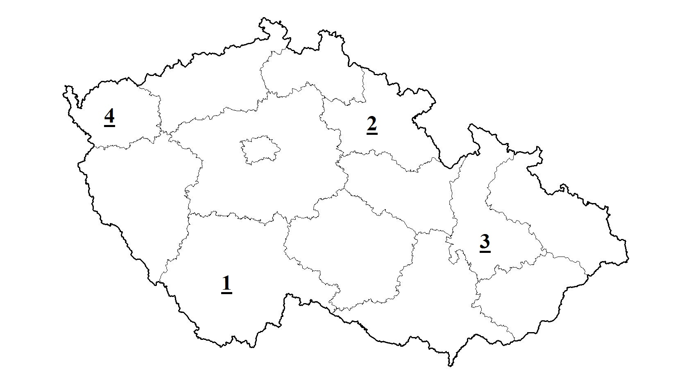
- A) 1.
- B) 2.
- C) 3.
- D) 4.
- Správná odpověď?Správná odpověď: C
- Datum aktualizace testové úlohyDatum aktualizace testové úlohy: 8. 12. 2014
- Jak se jmenuje největší krajské město v západních Čechách?
- A) Zlín.
- B) Plzeň.
- C) Jihlava.
- D) Ústí nad Labem.
- Správná odpověď?Správná odpověď: B
- Datum aktualizace testové úlohyDatum aktualizace testové úlohy: 20. 11. 2013
- Česko se dělí na kraje. Kolik je dnes krajů?
- A) 3.
- B) 8.
- C) 14.
- D) 22.
- Správná odpověď?Správná odpověď: C
- Datum aktualizace testové úlohyDatum aktualizace testové úlohy: 20. 11. 2013
-
Které číslo na mapě označuje Kraj Vysočina?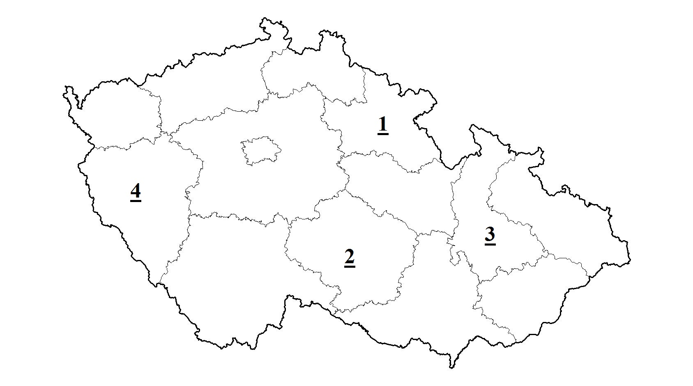
- A) 1.
- B) 2.
- C) 3.
- D) 4.
- Správná odpověď?Správná odpověď: B
- Datum aktualizace testové úlohyDatum aktualizace testové úlohy: 20. 11. 2013
- Které z těchto měst je průmyslovým centrem severních Čech?
- A) Plzeň.
- B) Olomouc.
- C) Hradec Králové.
- D) Ústí nad Labem.
- Správná odpověď?Správná odpověď: D
- Datum aktualizace testové úlohyDatum aktualizace testové úlohy: 20. 11. 2013
Ochrana životního prostředí
- Co znamená zkratka CHKO?
- A) Chráněná krajská oblast.
- B) Chráněná kulturní oblast.
- C) Chráněná krajinná oblast.
- D) Chráněná květinová oblast.
- Správná odpověď?Správná odpověď: C
- Datum aktualizace testové úlohyDatum aktualizace testové úlohy: 20. 11. 2013
- Který národní park leží u hranice Česka s Polskem?
- A) Národní park Podyjí.
- B) Šumavský národní park.
- C) Krkonošský národní park.
- D) Národní park České Švýcarsko.
- Správná odpověď?Správná odpověď: C
- Datum aktualizace testové úlohyDatum aktualizace testové úlohy: 20. 11. 2013
- Třídění odpadu pomáhá chránit životní prostředí. Kterou barvu má kontejner na papír?
- A) Bílou.
- B) Žlutou.
- C) Modrou.
- D) Zelenou.
- Správná odpověď?Správná odpověď: C
- Datum aktualizace testové úlohyDatum aktualizace testové úlohy: 20. 11. 2013
- Které číslo označuje největší národní park v České republice – Šumavský národní park?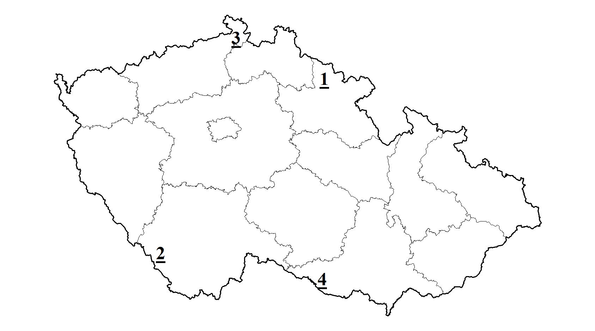
- A) 1.
- B) 2.
- C) 3.
- D) 4.
- Správná odpověď?Správná odpověď: B
- Datum aktualizace testové úlohyDatum aktualizace testové úlohy: 8. 12. 2014
- Tříděný odpad se ukládá do barevných kontejnerů. Co nepatří do žlutého kontejneru?
- A) Igelitové tašky.
- B) Plastové nádobí.
- C) PET láhve od nápojů.
- D) Skleněné láhve od nápojů.
- Správná odpověď?Správná odpověď: D
- Datum aktualizace testové úlohyDatum aktualizace testové úlohy: 9. 6. 2014
- Tříděný odpad se ukládá do barevných kontejnerů. Co nepatří do modrého kontejneru?
- A) PET láhve od nápojů.
- B) Noviny a časopisy.
- C) Obálky na dopisy.
- D) Reklamní letáky.
- Správná odpověď?Správná odpověď: A
- Datum aktualizace testové úlohyDatum aktualizace testové úlohy: 20. 11. 2013
- Pan Novák jede na výlet do chráněné krajinné oblasti. Co tady nemůže dělat?
- A) Sbírat houby.
- B) Koupat se v řece.
- C) Mýt auto v potoce.
- D) Jezdit na kole po polních cestách.
- Správná odpověď?Správná odpověď: C
- Datum aktualizace testové úlohyDatum aktualizace testové úlohy: 20. 11. 2013
- Paní Svobodová se rozhodla jet s rodinou na výlet do národního parku. Co tam můžou dělat bez povolení?
- A) Postavit stan.
- B) Trhat květiny.
- C) Rozdělávat oheň.
- D) Chodit po značených cestách.
- Správná odpověď?Správná odpověď: D
- Datum aktualizace testové úlohyDatum aktualizace testové úlohy: 8. 12. 2014
- Tříděný odpad se ukládá do barevných kontejnerů. Co patří do zeleného kontejneru?
- A) Skleněné láhve.
- B) Noviny a časopisy.
- C) PET láhve od nápojů.
- D) Použité elektrické přístroje.
- Správná odpověď?Správná odpověď: A
- Datum aktualizace testové úlohyDatum aktualizace testové úlohy: 8. 12. 2014
- Česko má bohaté zásoby podzemních minerálních vod. Ve kterém regionu najdeme prameny minerálních vod, jako jsou Magnesia, Aquila, Mattoni?
- A) V okolí města Brno.
- B) V okolí města Ostrava.
- C) V okolí města Karlovy Vary.
- D) V okolí města Ústí nad Labem.
- Správná odpověď?Správná odpověď: C
- Datum aktualizace testové úlohyDatum aktualizace testové úlohy: 8. 12. 2014
Sociokulturní souvislosti
- Kolik obyvatel má přibližně Česká republika?
- A) 5 milionů.
- B) 10 milionů.
- C) 15 milionů.
- D) 20 milionů.
- Správná odpověď?Správná odpověď: B
- Datum aktualizace testové úlohyDatum aktualizace testové úlohy: 20. 11. 2013
- Národnostní menšinou je skupina občanů České republiky, kteří se hlásí k jiné než české národnosti. Kdo tvoří největší národnostní menšinu v Česku?
- A) Poláci.
- B) Němci.
- C) Slováci.
- D) Vietnamci.
- Správná odpověď?Správná odpověď: C
- Datum aktualizace testové úlohyDatum aktualizace testové úlohy: 8. 12. 2014
- Která církev má v Česku nejvíce věřících?
- A) Husitská.
- B) Katolická.
- C) Evangelická.
- D) Pravoslavná.
- Správná odpověď?Správná odpověď: B
- Datum aktualizace testové úlohyDatum aktualizace testové úlohy: 20. 11. 2013
- Ve kterém kraji Česka leží kulturní region Chodsko?
- A) V Ústeckém.
- B) V Plzeňském.
- C) V Libereckém.
- D) V Královéhradeckém.
- Správná odpověď?Správná odpověď: B
- Datum aktualizace testové úlohyDatum aktualizace testové úlohy: 20. 11. 2013
- Které krajské město je centrem kulturního regionu Haná?
- A) Ostrava.
- B) Olomouc.
- C) Hradec Králové.
- D) České Budějovice.
- Správná odpověď?Správná odpověď: B
- Datum aktualizace testové úlohyDatum aktualizace testové úlohy: 20. 11. 2013
- Ve kterém z těchto krajů Česka je v současné době nejvyšší procento nezaměstnaných?
- A) V Ústeckém kraji.
- B) V Jihočeském kraji.
- C) V Libereckém kraji.
- D) Ve Středočeském kraji.
- Správná odpověď?Správná odpověď: A
- Datum aktualizace testové úlohyDatum aktualizace testové úlohy: 8. 12. 2014
- Které náboženství je v Česku nejrozšířenější?
- A) Islám.
- B) Judaismus.
- C) Křesťanství.
- D) Buddhismus.
- Správná odpověď?Správná odpověď: C
- Datum aktualizace testové úlohyDatum aktualizace testové úlohy: 20. 11. 2013
- Která z těchto skupin tvoří nejvyšší procento obyvatel Česka?
- A) Ateisté.
- B) Katolíci.
- C) Protestanti.
- D) Pravoslavní.
- Správná odpověď?Správná odpověď: A
- Datum aktualizace testové úlohyDatum aktualizace testové úlohy: 8. 12. 2014
- Jak se jmenuje největší město na Moravě?
- A) Zlín.
- B) Brno.
- C) Jihlava.
- D) Olomouc.
- Správná odpověď?Správná odpověď: B
- Datum aktualizace testové úlohyDatum aktualizace testové úlohy: 20. 11. 2013
- Které tvrzení odpovídá postavení žen v české společnosti?
- A) Ženy nepracují v justici.
- B) Ženy nepracují v armádě.
- C) Ženy mají stejná práva jako muži.
- D) Ženy mají omezené volební právo.
- Správná odpověď?Správná odpověď: C
- Datum aktualizace testové úlohyDatum aktualizace testové úlohy: 20. 11. 2013
Socioekonomické souvislosti
- Ve kterém kraji je atomová elektrárna Temelín?
- A) V Ústeckém kraji.
- B) V Jihočeském kraji.
- C) V Jihomoravském kraji.
- D) V Moravskoslezském kraji.
- Správná odpověď?Správná odpověď: B
- Datum aktualizace testové úlohyDatum aktualizace testové úlohy: 20. 11. 2013
- Která z těchto měst spojuje dálnice D1?
- A) Prahu a Pardubice.
- B) Prahu a Liberec.
- C) Prahu a Plzeň.
- D) Prahu a Brno.
- Správná odpověď?Správná odpověď: D
- Datum aktualizace testové úlohyDatum aktualizace testové úlohy: 20. 11. 2013
- U kterého lázeňského města leží mezinárodní letiště?
- A) U města Třeboň.
- B) U města Jeseník.
- C) U města Luhačovice.
- D) U města Karlovy Vary.
- Správná odpověď?Správná odpověď: D
- Datum aktualizace testové úlohyDatum aktualizace testové úlohy: 20. 11. 2013
- V Kopřivnici se vyrábí nákladní automobily tradiční značky. Jak se tato značka jmenuje?
- A) Tatra.
- B) Zetor.
- C) Škoda.
- D) Karosa.
- Správná odpověď?Správná odpověď: A
- Datum aktualizace testové úlohyDatum aktualizace testové úlohy: 8. 12. 2014
- Který pivovar vyrábí pivo značky Pilsner Urquell?
- A) Starobrno.
- B) Staropramen.
- C) Plzeňský Prazdroj.
- D) Budějovický Budvar.
- Správná odpověď?Správná odpověď: C
- Datum aktualizace testové úlohyDatum aktualizace testové úlohy: 20. 11. 2013
- Pro výrobu piva je důležitou surovinou chmel. Kde se pěstuje chmel?
- A) V okolí města Žatec.
- B) V okolí města Trutnov.
- C) V okolí města Mikulov.
- D) V okolí města Žďár nad Sázavou.
- Správná odpověď?Správná odpověď: A
- Datum aktualizace testové úlohyDatum aktualizace testové úlohy: 8. 12. 2014
- Která z těchto nerostných surovin se těží v Česku?
- A) Zlato.
- B) Stříbro.
- C) Hnědé uhlí.
- D) Železná ruda.
- Správná odpověď?Správná odpověď: C
- Datum aktualizace testové úlohyDatum aktualizace testové úlohy: 20. 11. 2013
- Kde se v Česku těží hnědé uhlí?
- A) Na jižní Moravě.
- B) V jižních Čechách.
- C) Na severní Moravě.
- D) V severních Čechách.
- Správná odpověď?Správná odpověď: D
- Datum aktualizace testové úlohyDatum aktualizace testové úlohy: 20. 11. 2013
- Která značka osobních automobilů se vyrábí ve městě Mladá Boleslav?
- A) Hyundai.
- B) Peugeot.
- C) Škoda.
- D) Tatra.
- Správná odpověď?Správná odpověď: C
- Datum aktualizace testové úlohyDatum aktualizace testové úlohy: 20. 11. 2013
- Ve kterém kraji Česka se vytěží nejvíce černého uhlí?
- A) V Jihočeském kraji.
- B) Ve Středočeském kraji.
- C) V Jihomoravském kraji.
- D) V Moravskoslezském kraji.
- Správná odpověď?Správná odpověď: D
- Datum aktualizace testové úlohyDatum aktualizace testové úlohy: 20. 11. 2013
Mezinárodní souvislosti
- Jak se jmenuje vojenská organizace, která zajišťuje bezpečnost České republiky?
- A) NATO.
- B) CEFTA.
- C) Evropská unie.
- D) Varšavská smlouva.
- Správná odpověď?Správná odpověď: A
- Datum aktualizace testové úlohyDatum aktualizace testové úlohy: 8. 12. 2014
- Česká republika je členem Evropské unie. Které z těchto měst je sídlem hlavních orgánů Evropské unie?
- A) Řím.
- B) Paříž.
- C) Brusel.
- D) Londýn.
- Správná odpověď?Správná odpověď: C
- Datum aktualizace testové úlohyDatum aktualizace testové úlohy: 8. 12. 2014
- Které z těchto měst je sídlem Evropského parlamentu?
- A) Paříž.
- B) Ženeva.
- C) Schengen.
- D) Štrasburk.
- Správná odpověď?Správná odpověď: D
- Datum aktualizace testové úlohyDatum aktualizace testové úlohy: 8. 12. 2014
- Které město je sídlem Evropského soudu pro lidská práva?
- A) Haag.
- B) Brusel.
- C) Štrasburk.
- D) Lucemburk.
- Správná odpověď?Správná odpověď: C
- Datum aktualizace testové úlohyDatum aktualizace testové úlohy: 20. 11. 2013
- V roce 2007 Česko vstoupilo do Schengenského prostoru. Do které z těchto zemí může český občan cestovat bez kontroly na hranicích?
- A) Do Ruska
- B) Do Německa.
- C) Do Velké Británie.
- D) Do Spojených států amerických.
- Správná odpověď?Správná odpověď: B
- Datum aktualizace testové úlohyDatum aktualizace testové úlohy: 8. 12. 2014
- Paní Novotná letí do Itálie, která je stejně jako Česko v Schengenském prostoru. Které dokumenty a doklady bude potřebovat na cestu?
- A) Cestovní pas a vízum.
- B) Cestovní pas, vízum a pozvání.
- C) Cestovní pas nebo občanský průkaz.
- D) Výjezdní doložku, devizový příslib a cestovní pas.
- Správná odpověď?Správná odpověď: C
- Datum aktualizace testové úlohyDatum aktualizace testové úlohy: 8. 12. 2014
- V roce 2004 Česká republika vstoupila do Evropské unie. Co může od té doby dělat český občan?
- A) Cestovat do celého světa bez víz.
- B) Pracovat a podnikat v zemích Evropské unie.
- C) Platit českou korunou v zemích Evropské unie.
- D) Používat češtinu jako úřední jazyk v sousedních zemích.
- Správná odpověď?Správná odpověď: B
- Datum aktualizace testové úlohyDatum aktualizace testové úlohy: 8. 12. 2014
- V mnoha státech v Evropě je měnou euro. V Česku je měnou koruna česká. Který ze sousedních států Česka nemá měnu euro?
- A) Slovensko.
- B) Rakousko.
- C) Německo.
- D) Polsko.
- Správná odpověď?Správná odpověď: D
- Datum aktualizace testové úlohyDatum aktualizace testové úlohy: 8. 12. 2014
- Česká republika je členem NATO. Které město je sídlem této organizace?
- A) Paříž.
- B) Brusel.
- C) Ženeva.
- D) Štrasburk.
- Správná odpověď?Správná odpověď: B
- Datum aktualizace testové úlohyDatum aktualizace testové úlohy: 8. 12. 2014
- Při cestě do které země potřebuje český občan cestovní pas, protože mu nestačí pouze občanský průkaz?
- A) Do Rakouska.
- B) Do Německa.
- C) Do Francie.
- D) Do Ruska.
- Správná odpověď?Správná odpověď: D
- Datum aktualizace testové úlohyDatum aktualizace testové úlohy: 8. 12. 2014
Základní historické a kulturní informace o České republice
Středověk
- Kdo podle pověsti vystoupil na horu Říp?
- A) Praotec Čech.
- B) Přemysl Oráč.
- C) Kněžna Libuše.
- D) Vladyka Horymír.
- Správná odpověď?Správná odpověď: A
- Datum aktualizace testové úlohyDatum aktualizace testové úlohy: 20. 11. 2013
- Kterou osobnost si připomínáme na den české státnosti – 28. září?
- A) Svatou Anežku.
- B) Svatou Ludmilu.
- C) Svatého Václava.
- D) Svatého Vojtěcha.
- Správná odpověď?Správná odpověď: C
- Datum aktualizace testové úlohyDatum aktualizace testové úlohy: 20. 11. 2013
- Kdo podle pověsti přivedl Čechy na území dnešního českého státu?
- A) Kníže Lech.
- B) Kupec Sámo.
- C) Kníže Arpád.
- D) Praotec Čech.
- Správná odpověď?Správná odpověď: D
- Datum aktualizace testové úlohyDatum aktualizace testové úlohy: 20. 11. 2013
- Jak se podle pověstí jmenuje kněžna, která předpověděla slávu Prahy?
- A) Šárka.
- B) Vlasta.
- C) Libuše.
- D) Ludmila.
- Správná odpověď?Správná odpověď: C
- Datum aktualizace testové úlohyDatum aktualizace testové úlohy: 20. 11. 2013
- Jak se jmenovali bratři, kteří šířili křesťanství na Velké Moravě?
- A) Cyril a Metoděj.
- B) Jaromír a Oldřich.
- C) Václav a Boleslav.
- D) Spytihněv a Vratislav.
- Správná odpověď?Správná odpověď: A
- Datum aktualizace testové úlohyDatum aktualizace testové úlohy: 20. 11. 2013
- Který rod vládl v Čechách od 9. století do roku 1306?
- A) Jagellonci.
- B) Přemyslovci.
- C) Habsburkové.
- D) Lucemburkové.
- Správná odpověď?Správná odpověď: B
- Datum aktualizace testové úlohyDatum aktualizace testové úlohy: 20. 11. 2013
- Ze kterého rodu byl slavný český král a římský císař Karel IV.?
- A) Z rodu Jagellonců.
- B) Z rodu Habsburků.
- C) Z rodu Přemyslovců.
- D) Z rodu Lucemburků.
- Správná odpověď?Správná odpověď: D
- Datum aktualizace testové úlohyDatum aktualizace testové úlohy: 20. 11. 2013
- Kdo byl mistr Jan Hus?
- A) Český král.
- B) Český lékař.
- C) Český cestovatel.
- D) Český reformátor církve.
- Správná odpověď?Správná odpověď: D
- Datum aktualizace testové úlohyDatum aktualizace testové úlohy: 20. 11. 2013
- Co založil král Karel IV. v Praze v roce 1348?
- A) První český pivovar.
- B) První klášter v Čechách.
- C) První dílnu na výrobu papíru.
- D) První univerzitu ve střední Evropě.
- Správná odpověď?Správná odpověď: D
- Datum aktualizace testové úlohyDatum aktualizace testové úlohy: 20. 11. 2013
- Jak se jmenoval nejslavnější český vojevůdce?
- A) Jan Hus.
- B) Jan Žižka.
- C) Jan Želivský.
- D) Jan Rokycana.
- Správná odpověď?Správná odpověď: B
- Datum aktualizace testové úlohyDatum aktualizace testové úlohy: 8. 12. 2014
Novověk
- V 16. století se Praha stala kulturním centrem Evropy. Jak se jmenoval panovník, který tehdy v Čechách vládl?
- A) Rudolf II.
- B) Václav II.
- C) František II.
- D) Ferdinand II.
- Správná odpověď?Správná odpověď: A
- Datum aktualizace testové úlohyDatum aktualizace testové úlohy: 20. 11. 2013
- Který rod začal vládnout Českému království v roce 1526 a vládl až do roku 1918?
- A) Jagellonci.
- B) Přemyslovci.
- C) Habsburkové.
- D) Lucemburkové.
- Správná odpověď?Správná odpověď: C
- Datum aktualizace testové úlohyDatum aktualizace testové úlohy: 8. 12. 2014
- V 17. století se Češi postavili proti Habsburkům. Která válka touto událostí začala?
- A) Sedmiletá válka.
- B) Třicetiletá válka.
- C) Napoleonské války.
- D) Války o dědictví rakouské.
- Správná odpověď?Správná odpověď: B
- Datum aktualizace testové úlohyDatum aktualizace testové úlohy: 20. 11. 2013
- Ve kterém městě se odehrává pověst o Golemovi, kterého stvořil rabi Löw?
- A) V Plzni.
- B) V Praze.
- C) V Jihlavě.
- D) V Ostravě.
- Správná odpověď?Správná odpověď: B
- Datum aktualizace testové úlohyDatum aktualizace testové úlohy: 20. 11. 2013
- Jak se jmenoval významný český učitel a filozof, který v 17. století musel odejít do ciziny?
- A) Petr Brandl.
- B) Karel Škréta.
- C) Jan Dismas Zelenka.
- D) Jan Amos Komenský.
- Správná odpověď?Správná odpověď: D
- Datum aktualizace testové úlohyDatum aktualizace testové úlohy: 20. 11. 2013
- Jak se jmenovala slavná císařovna, která vládla v českých zemích v 18. století?
- A) Marie Terezie.
- B) Marie Antoinetta.
- C) Kunhuta Uherská.
- D) Eliška Přemyslovna.
- Správná odpověď?Správná odpověď: A
- Datum aktualizace testové úlohyDatum aktualizace testové úlohy: 8. 12. 2014
- České země byly od roku 1867 součástí Rakouska-Uherska. Kdy přestalo existovat Rakousko-Uhersko?
- A) V roce 1914.
- B) V roce 1918.
- C) V roce 1938.
- D) V roce 1948.
- Správná odpověď?Správná odpověď: B
- Datum aktualizace testové úlohyDatum aktualizace testové úlohy: 8. 12. 2014
- Jak se říká rozvoji české kultury v 19. století?
- A) Jaro národů.
- B) Normalizace.
- C) Národní obrození.
- D) Sametová revoluce.
- Správná odpověď?Správná odpověď: C
- Datum aktualizace testové úlohyDatum aktualizace testové úlohy: 20. 11. 2013
- Kdo vládl českým zemím od roku 1848 do roku 1916?
- A) Karel I.
- B) František II.
- C) Ferdinand V.
- D) František Josef I.
- Správná odpověď?Správná odpověď: D
- Datum aktualizace testové úlohyDatum aktualizace testové úlohy: 20. 11. 2013
- Které z těchto jazyků byly nejpoužívanějšími jazyky na území Česka v 19. století?
- A) Čeština a ruština.
- B) Čeština a němčina.
- C) Čeština a angličtina.
- D) Čeština a francouzština.
- Správná odpověď?Správná odpověď: B
- Datum aktualizace testové úlohyDatum aktualizace testové úlohy: 8. 12. 2014
Dějiny Československa do roku 1948
- Co pro Československo znamenala mnichovská dohoda, kterou podepsalo Německo a další tři státy v září 1938?
- A) Začátek války.
- B) Obsazení Prahy.
- C) Ztrátu pohraničí.
- D) Ztrátu Slovenska.
- Správná odpověď?Správná odpověď: C
- Datum aktualizace testové úlohyDatum aktualizace testové úlohy: 20. 11. 2013
- Kdo se stal československým prezidentem po T. G. Masarykovi v roce 1935?
- A) Antonín Zápotocký.
- B) Klement Gottwald.
- C) Edvard Beneš.
- D) Emil Hácha.
- Správná odpověď?Správná odpověď: C
- Datum aktualizace testové úlohyDatum aktualizace testové úlohy: 20. 11. 2013
- Jak se jmenoval československý prezident, který žil za 2. světové války ve Velké Británii?
- A) Edvard Beneš.
- B) Klement Gottwald.
- C) Antonín Zápotocký.
- D) Tomáš Garrigue Masaryk.
- Správná odpověď?Správná odpověď: A
- Datum aktualizace testové úlohyDatum aktualizace testové úlohy: 20. 11. 2013
- Které velké armády osvobodily území Československa v roce 1945?
- A) Americká a anglická.
- B) Americká a sovětská.
- C) Americká a kanadská.
- D) Americká a francouzská.
- Správná odpověď?Správná odpověď: B
- Datum aktualizace testové úlohyDatum aktualizace testové úlohy: 20. 11. 2013
- Kdo tvořil v letech 1918–1938 největší národnostní skupinu vedle Čechů a Slováků?
- A) Poláci.
- B) Němci.
- C) Rusíni.
- D) Maďaři.
- Správná odpověď?Správná odpověď: B
- Datum aktualizace testové úlohyDatum aktualizace testové úlohy: 8. 12. 2014
- Kdo se stal prvním československým prezidentem v roce 1918?
- A) T. G. Masaryk.
- B) Edvard Beneš.
- C) Karel Kramář.
- D) Alois Rašín.
- Správná odpověď?Správná odpověď: A
- Datum aktualizace testové úlohyDatum aktualizace testové úlohy: 20. 11. 2013
- Jak se jmenoval zastupující říšský protektor, na kterého spáchali Gabčík a Kubiš v roce 1942 v Praze atentát?
- A) K. H. Frank.
- B) Joseph Goebbels.
- C) Hermann Göring.
- D) Reinhard Heydrich.
- Správná odpověď?Správná odpověď: D
- Datum aktualizace testové úlohyDatum aktualizace testové úlohy: 8. 12. 2014
- Který den si Česká republika připomíná konec druhé světové války - Den vítězství?
- A) 6. července.
- B) 8. května.
- C) 28. října.
- D) 28. září.
- Správná odpověď?Správná odpověď: B
- Datum aktualizace testové úlohyDatum aktualizace testové úlohy: 8. 12. 2014
- Jak se nazývá období československých dějin od roku 1918 do roku 1938?
- A) První republika.
- B) Druhá republika.
- C) Rakouské císařství.
- D) Rakousko-Uhersko.
- Správná odpověď?Správná odpověď: A
- Datum aktualizace testové úlohyDatum aktualizace testové úlohy: 8. 12. 2014
- Kdy vznikl samostatný československý stát?
- A) 29. září 1938.
- B) 1. ledna 1993.
- C) 28. října 1918.
- D) 8. května 1945.
- Správná odpověď?Správná odpověď: C
- Datum aktualizace testové úlohyDatum aktualizace testové úlohy: 20. 11. 2013
Dějiny Československa od roku 1948 do roku 1989
- Kdo získal v únoru 1948 vládu nad Československem?
- A) Fašisté.
- B) Nacisté.
- C) Socialisté.
- D) Komunisté.
- Správná odpověď?Správná odpověď: D
- Datum aktualizace testové úlohyDatum aktualizace testové úlohy: 20. 11. 2013
- Jak se jmenoval student, který se v roce 1969 upálil na protest proti okupaci Československa?
- A) Jan Palach.
- B) Jan Opletal.
- C) Martin Šmíd.
- D) Václav Sedláček.
- Správná odpověď?Správná odpověď: A
- Datum aktualizace testové úlohyDatum aktualizace testové úlohy: 20. 11. 2013
- Kdo se stal československým prezidentem po Edvardu Benešovi v roce 1948?
- A) Gustáv Husák.
- B) Antonín Novotný.
- C) Klement Gottwald.
- D) Antonín Zápotocký.
- Správná odpověď?Správná odpověď: C
- Datum aktualizace testové úlohyDatum aktualizace testové úlohy: 20. 11. 2013
- Jak se jmenoval dokument, kterým někteří občané v 70. letech protestovali proti komunistickému režimu?
- A) Poučení z krizového vývoje.
- B) Několik vět.
- C) 2 000 slov.
- D) Charta 77.
- Správná odpověď?Správná odpověď: D
- Datum aktualizace testové úlohyDatum aktualizace testové úlohy: 20. 11. 2013
- Kdy vojáci zemí Varšavské smlouvy obsadili Československo?
- A) 28. října 1918.
- B) 21. srpna 1968.
- C) 15. března 1939.
- D) 17. listopadu 1989.
- Správná odpověď?Správná odpověď: B
- Datum aktualizace testové úlohyDatum aktualizace testové úlohy: 8. 12. 2014
- Kdy začala v Československu sametová revoluce?
- A) 8. května 1945.
- B) 25. února 1948.
- C) 17. listopadu 1939.
- D) 17. listopadu 1989.
- Správná odpověď?Správná odpověď: D
- Datum aktualizace testové úlohyDatum aktualizace testové úlohy: 20. 11. 2013
- Kdo se stal v prosinci 1989 československým prezidentem?
- A) Miloš Zeman.
- B) Václav Klaus.
- C) Václav Havel.
- D) Alexander Dubček.
- Správná odpověď?Správná odpověď: C
- Datum aktualizace testové úlohyDatum aktualizace testové úlohy: 20. 11. 2013
- Jaký program měla protikomunistická občanská iniciativa Charta 77?
- A) Ozbrojený boj.
- B) Uměleckou tvorbu.
- C) Ochranu lidských práv.
- D) Vydávání české literatury v zahraničí.
- Správná odpověď?Správná odpověď: C
- Datum aktualizace testové úlohyDatum aktualizace testové úlohy: 8. 12. 2014
- Který československý a český prezident je na obrázku?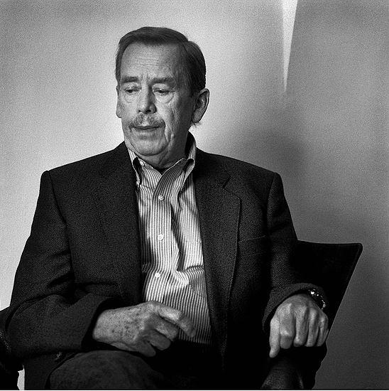
- A) Miloš Zeman.
- B) Václav Klaus.
- C) Václav Havel.
- D) Alexander Dubček.
- Správná odpověď?Správná odpověď: C
- Zobrazit citaceCitace obrazového materiálu:
JIROUTEK, J. [online]. [cit. 2013-08-16]. Dostupný pod licencí Public domain na WWW: <http://cs.wikipedia.org/wiki/Soubor:Jiri_Jiroutek_Havel_Vaclav,_Praha_2006.jpg> - Datum aktualizace testové úlohyDatum aktualizace testové úlohy: 20. 11. 2013
- Kdo stál na začátku sametové revoluce v roce 1989?
- A) Vojáci.
- B) Dělníci.
- C) Studenti.
- D) Úředníci.
- Správná odpověď?Správná odpověď: C
- Datum aktualizace testové úlohyDatum aktualizace testové úlohy: 20. 11. 2013
Dějiny Česka od roku 1989
- Kdy vznikla samostatná Česká republika?
- A) 1. ledna 1993.
- B) 28. října 1918.
- C) 9. května 1945.
- D) 17. listopadu 1989.
- Správná odpověď?Správná odpověď: A
- Datum aktualizace testové úlohyDatum aktualizace testové úlohy: 20. 11. 2013
- Kdy vstoupila Česká republika do NATO?
- A) V roce 1955.
- B) V roce 1989.
- C) V roce 1999.
- D) V roce 2004.
- Správná odpověď?Správná odpověď: C
- Datum aktualizace testové úlohyDatum aktualizace testové úlohy: 20. 11. 2013
- Do které organizace vstoupila Česká republika 1. května 2004?
- A) Do NATO.
- B) Do UNESCO.
- C) Do Rady Evropy.
- D) Do Evropské unie.
- Správná odpověď?Správná odpověď: D
- Datum aktualizace testové úlohyDatum aktualizace testové úlohy: 20. 11. 2013
- Kdy přestala existovat Česká a Slovenská Federativní Republika?
- A) 1. května 2004.
- B) 12. března 1999.
- C) 31. prosince 1992.
- D) 17. listopadu 1989.
- Správná odpověď?Správná odpověď: C
- Datum aktualizace testové úlohyDatum aktualizace testové úlohy: 20. 11. 2013
- Kdy se v České republice slaví Den boje za svobodu a demokracii?
- A) 28. října.
- B) 8. května.
- C) 6. července.
- D) 17. listopadu.
- Správná odpověď?Správná odpověď: D
- Datum aktualizace testové úlohyDatum aktualizace testové úlohy: 20. 11. 2013
- Kterou z těchto funkcí vykonával Václav Havel?
- A) Funkci předsedy vlády.
- B) Funkci předsedy Senátu.
- C) Funkci prezidenta republiky.
- D) Funkci předsedy Poslanecké sněmovny.
- Správná odpověď?Správná odpověď: C
- Datum aktualizace testové úlohyDatum aktualizace testové úlohy: 8. 12. 2014
- Co se stalo 1. 1. 1993?
- A) Začala sametová revoluce.
- B) Česká republika vstoupila do EU.
- C) Česká republika vstoupila do NATO.
- D) Vznikla samostatná Česká republika.
- Správná odpověď?Správná odpověď: D
- Datum aktualizace testové úlohyDatum aktualizace testové úlohy: 20. 11. 2013
- Kdo se stal českým prezidentem po Václavu Havlovi v roce 2003?
- A) Jan Švejnar.
- B) Václav Klaus.
- C) Miloš Zeman.
- D) Vladimír Špidla.
- Správná odpověď?Správná odpověď: B
- Datum aktualizace testové úlohyDatum aktualizace testové úlohy: 20. 11. 2013
- Kdo se stal českým prezidentem po Václavu Klausovi v roce 2013?
- A) Jan Fischer.
- B) Miloš Zeman.
- C) Přemysl Sobotka.
- D) Karel Schwarzenberg.
- Správná odpověď?Správná odpověď: B
- Datum aktualizace testové úlohyDatum aktualizace testové úlohy: 20. 11. 2013
- Jak se nazývá proces rozdělování státního majetku v 90. letech 20. století?
- A) Pětiletka.
- B) Znárodnění.
- C) Průmyslová revoluce.
- D) Kuponová privatizace.
- Správná odpověď?Správná odpověď: D
- Datum aktualizace testové úlohyDatum aktualizace testové úlohy: 8. 12. 2014
Významné osobnosti od 19. století do současnosti
- Ve kterém oboru se proslavili Bedřich Smetana a Antonín Dvořák?
- A) V sochařství.
- B) V malířství.
- C) V hudbě.
- D) V tanci.
- Správná odpověď?Správná odpověď: C
- Datum aktualizace testové úlohyDatum aktualizace testové úlohy: 20. 11. 2013
- Jak se jmenuje hlavní postava nejznámějšího románu Jaroslava Haška?
- A) Markéta Lazarová.
- B) Josef Švejk.
- C) Babička.
- D) Josef K.
- Správná odpověď?Správná odpověď: B
- Datum aktualizace testové úlohyDatum aktualizace testové úlohy: 20. 11. 2013
- Který český spisovatel získal Nobelovu cenu za literaturu?
- A) Franz Kafka.
- B) Jaroslav Hašek.
- C) Jaroslav Seifert.
- D) Bohumil Hrabal.
- Správná odpověď?Správná odpověď: C
- Datum aktualizace testové úlohyDatum aktualizace testové úlohy: 20. 11. 2013
- Který slavný český režisér žije v USA a dostal několik filmových cen Oscar?
- A) Jan Svěrák.
- B) Jiří Menzel.
- C) Jan Hřebejk.
- D) Miloš Forman.
- Správná odpověď?Správná odpověď: D
- Datum aktualizace testové úlohyDatum aktualizace testové úlohy: 20. 11. 2013
- V roce 1959 dostal Jaroslav Heyrovský jako první Čech Nobelovu cenu. Ve kterém oboru ji získal?
- A) V chemii.
- B) V literatuře.
- C) V medicíně.
- D) V ekonomii.
- Správná odpověď?Správná odpověď: A
- Datum aktualizace testové úlohyDatum aktualizace testové úlohy: 20. 11. 2013
- Ve kterém oboru vynikl František Kupka?
- A) V hudbě.
- B) V divadle.
- C) V literatuře.
- D) V malířství.
- Správná odpověď?Správná odpověď: D
- Datum aktualizace testové úlohyDatum aktualizace testové úlohy: 20. 11. 2013
- Jak se jmenoval český podnikatel a zakladatel významné strojírenské firmy v Plzni?
- A) Emil Škoda.
- B) Tomáš Baťa.
- C) Emil Kolben.
- D) Václav Laurin.
- Správná odpověď?Správná odpověď: A
- Datum aktualizace testové úlohyDatum aktualizace testové úlohy: 20. 11. 2013
- Kdo je autorem textu české státní hymny?
- A) Karel Havlíček Borovský.
- B) Karel Hynek Mácha.
- C) František Palacký.
- D) Josef Kajetán Tyl.
- Správná odpověď?Správná odpověď: D
- Datum aktualizace testové úlohyDatum aktualizace testové úlohy: 20. 11. 2013
- Jak se jmenuje literární dílo, které napsal Karel Hynek Mácha?
- A) Máj.
- B) Babička.
- C) F. L. Věk.
- D) Povídky malostranské.
- Správná odpověď?Správná odpověď: A
- Datum aktualizace testové úlohyDatum aktualizace testové úlohy: 20. 11. 2013
- Kdo je autorem hudby k české státní hymně?
- A) Leoš Janáček.
- B) Antonín Dvořák.
- C) František Škroup.
- D) Bedřich Smetana.
- Správná odpověď?Správná odpověď: C
- Datum aktualizace testové úlohyDatum aktualizace testové úlohy: 20. 11. 2013
Umění od středověku do současnosti
- Která významná pražská židovská památka je na obrázku?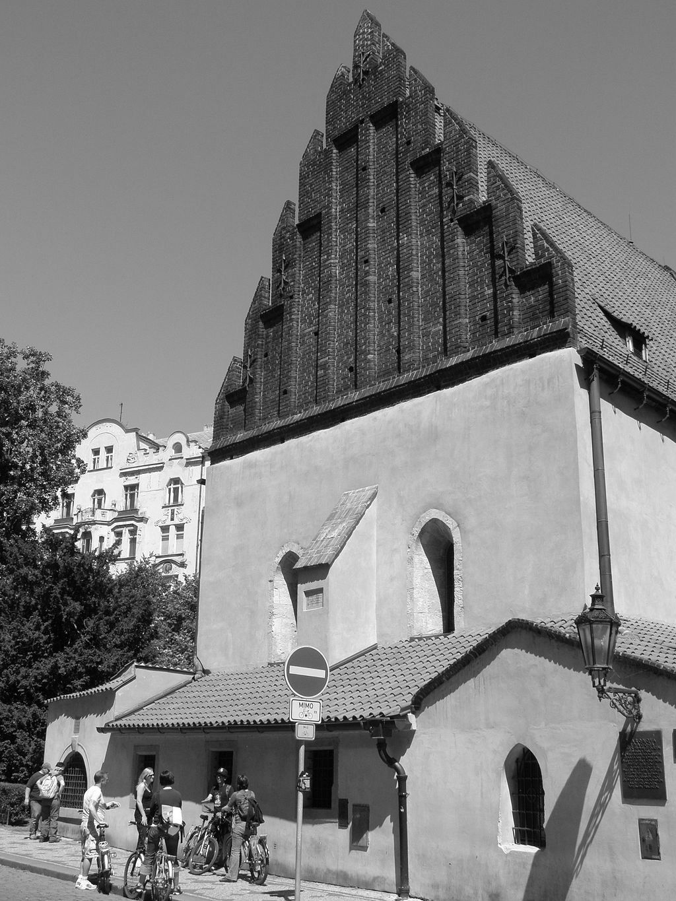
- A) Anežský klášter.
- B) Staronová synagoga.
- C) Staroměstská radnice.
- D) Kostel svatého Tomáše.
- Správná odpověď?Správná odpověď: B
- Zobrazit citaceCitace obrazového materiálu:
BARÁNEK, D. [online]. [cit. 2013-08-16]. Dostupný pod licencí Creative Commons na WWW: <http://commons.wikimedia.org/wiki/File:Praha,_Josefov,_Staronov%C3%A1_synagoga_01.jpg> - Datum aktualizace testové úlohyDatum aktualizace testové úlohy: 20. 11. 2013
- Na kterém obrázku jsou Pražský hrad s gotickým Chrámem svatého Víta – symboly české státnosti?
- Správná odpověď?Správná odpověď: A
- Zobrazit citaceCitace obrazového materiálu:
alternativa A
GROH, J. [online]. [cit. 2013-09-06]. Dostupný pod licencí Creative Commons na WWW: <http://commons.wikimedia.org/wiki/File:Povodn%C4%9B_v_Praze,_33.jpg>
alternativa B
ADÁMEK, P. [online]. [cit. 2013-09-06]. Dostupný pod licencí Public domain na WWW: <http://commons.wikimedia.org/wiki/File:Brno-%C5%A0pilberk_2.jpg>
alternativa C
H2K4. [online]. [cit. 2013-08-23]. Dostupný pod licencí Creative Commons na WWW: <http://commons.wikimedia.org/wiki/File:%C4%8Cesk%C3%BD_Krumlov,_z%C3%A1mek_%C4%8Cesk%C3%BD_Krumlov.JPG>
alternativa D
DUDÍK, J. [online]. [cit. 2013-09-06]. Dostupný pod licencí Creative Commons na WWW: <http://commons.wikimedia.org/wiki/File:%C4%8Cesk%C3%BD_%C5%A0ternberk,_z%C3%A1mek_01.jpg> - Datum aktualizace testové úlohyDatum aktualizace testové úlohy: 20. 11. 2013
A)
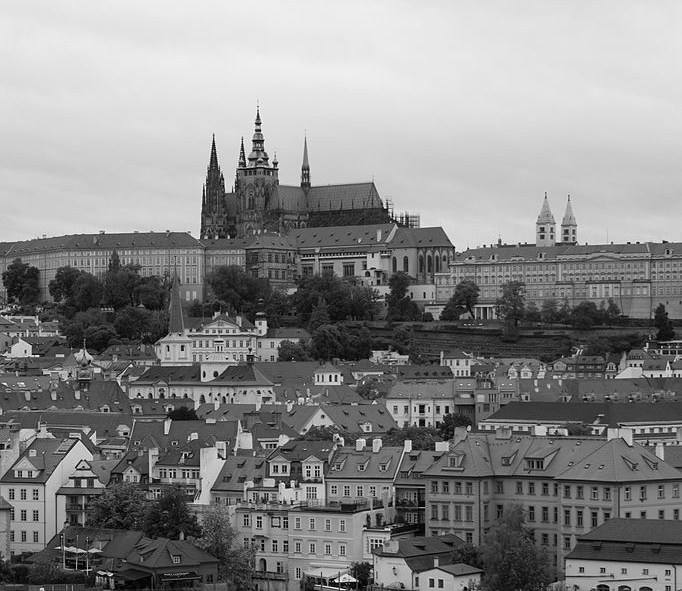B)
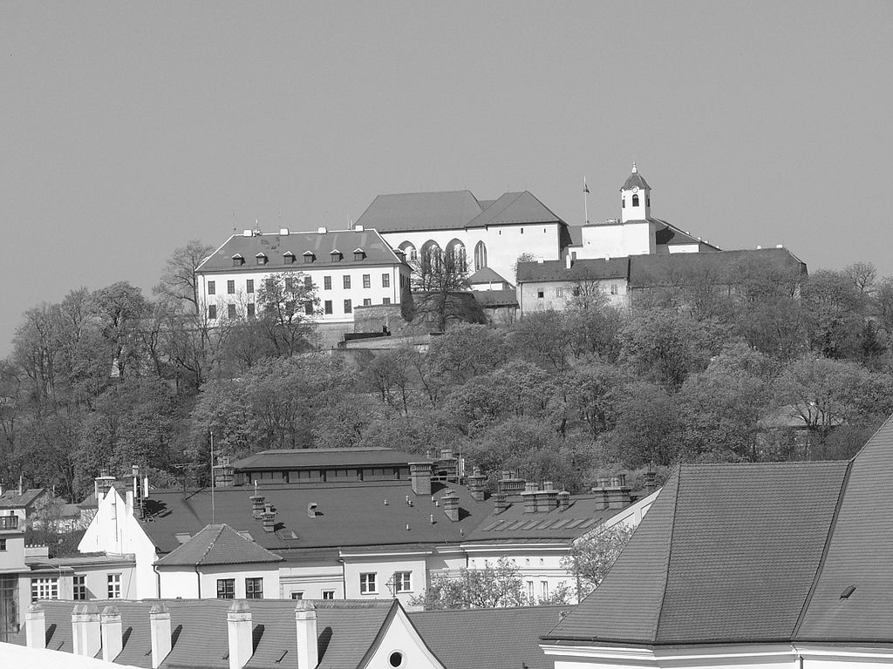C)
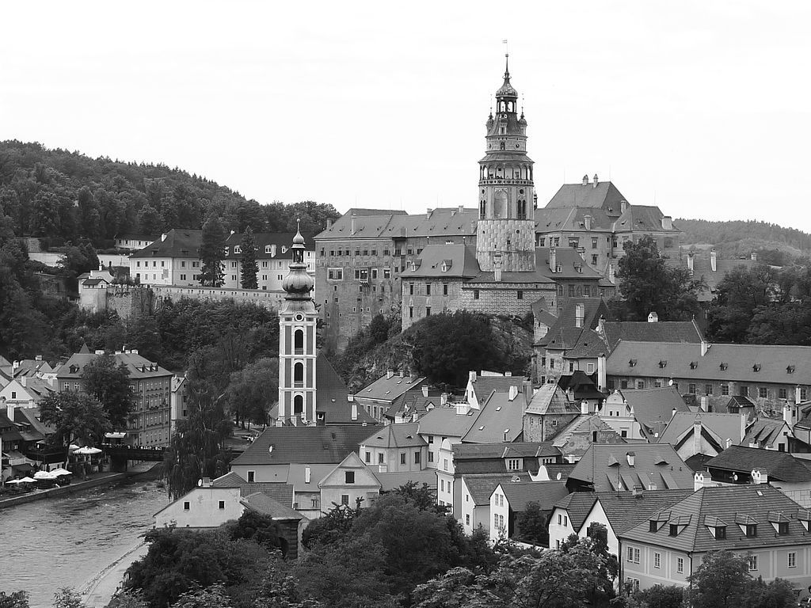D)
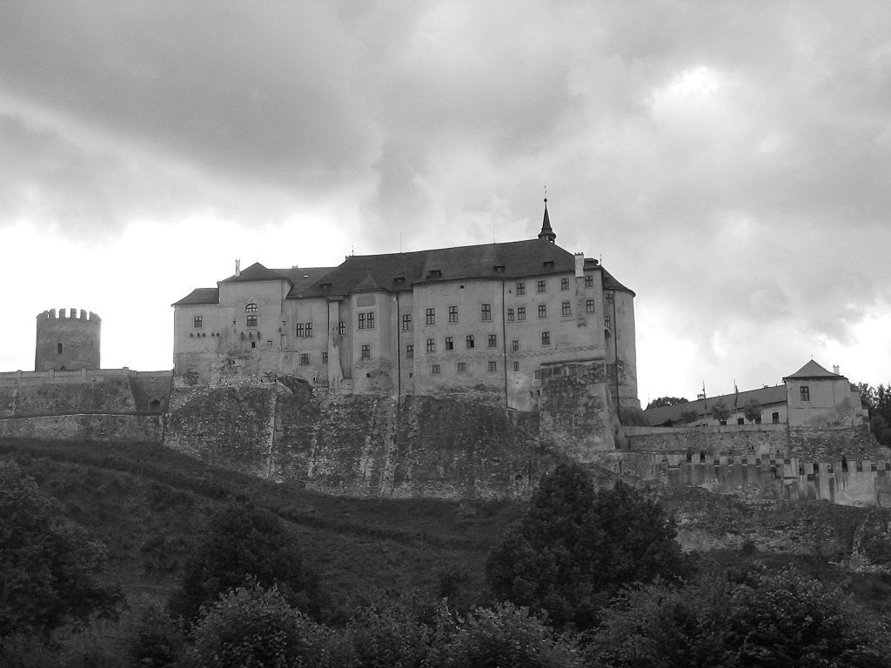 - Na kterém obrázku je Národní divadlo v Praze?
- Správná odpověď?Správná odpověď: B
- Zobrazit citaceCitace obrazového materiálu:
alternativa A
ACONCAGUA. [online]. [cit. 2013-08-16]. Dostupný pod licencí Creative Commons na WWW: <http://commons.wikimedia.org/wiki/File:Rudolfinum_Prague.jpg>
alternativa B
ZÖRNER, P. E. [online]. [cit. 2013-08-23]. Dostupný pod licencí Creative Commons na WWW: <http://commons.wikimedia.org/wiki/File:Praha_2005-09-20_n%C3%A1rodn%C3%AD_divadlo.jpg>
alternativa C
SCHAEFER, H. P. [online]. [cit. 2013-08-23]. Dostupný pod licencí Creative Commons na WWW: <http://commons.wikimedia.org/wiki/File:Prag_obecni_d%C3%BBm_gemeindehaus.jpg>
alternativa D
BAYARCAL, C. [online]. [cit. 2013-08-16]. Dostupný pod licencí Creative Commons na WWW: <http://commons.wikimedia.org/wiki/File:Czech_National_Museum.jpg> - Datum aktualizace testové úlohyDatum aktualizace testové úlohy: 20. 11. 2013
A)
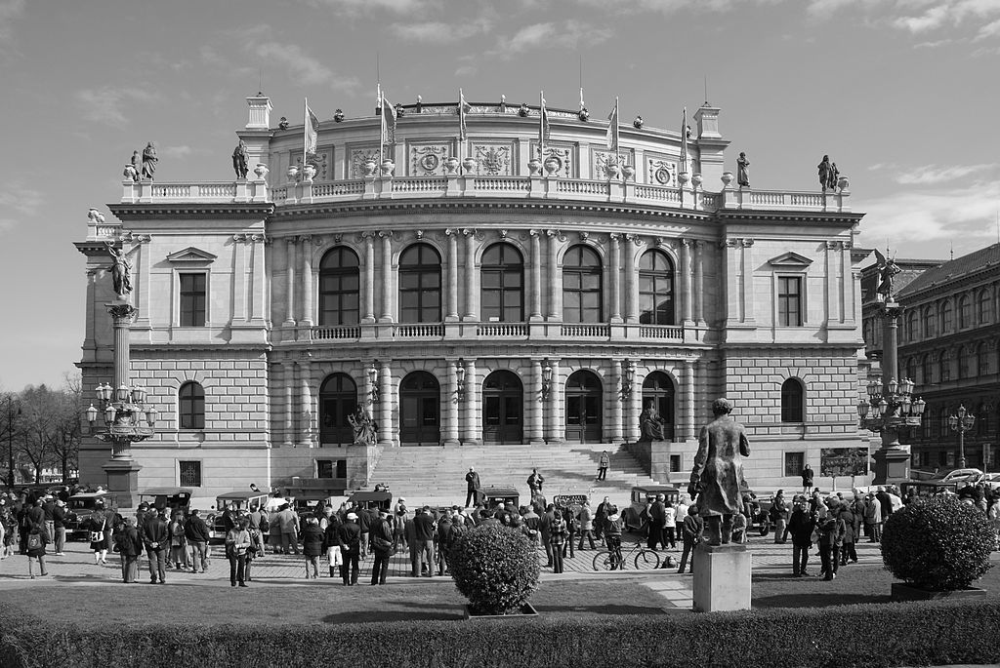B)
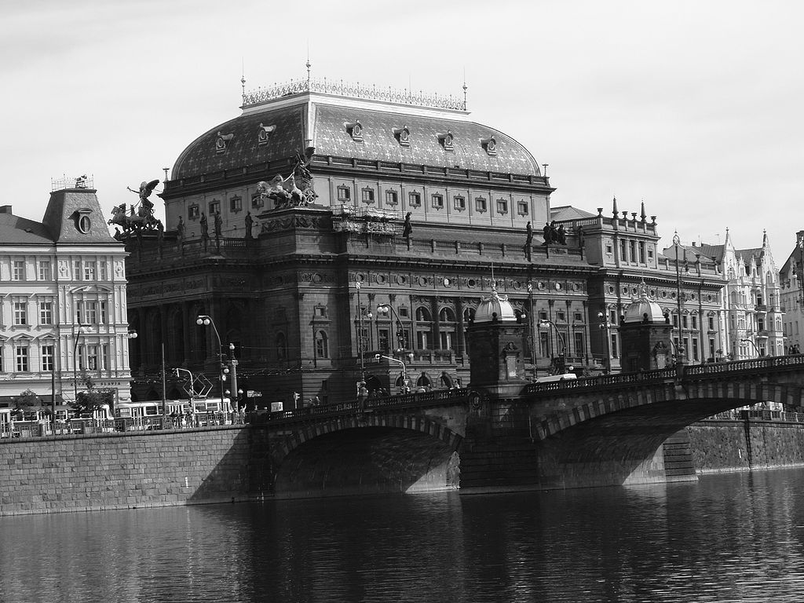C)
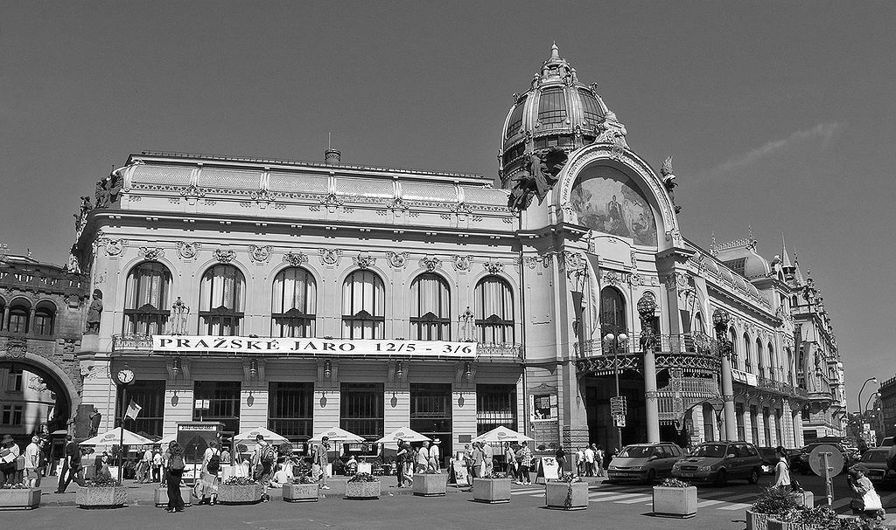D)
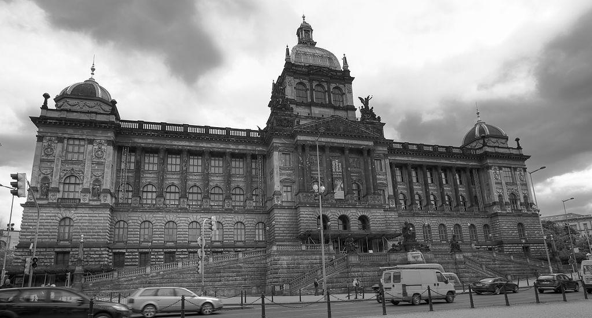 - Na kterém obrázku je hrad Karlštejn, který založil Karel IV.?
- Správná odpověď?Správná odpověď: C
- Zobrazit citaceCitace obrazového materiálu:
alternativa A
LEHOTSKY. [online]. [cit. 2013-08-16]. Dostupný pod licencí Creative Commons na WWW: <http://commons.wikimedia.org/wiki/File:Hrad_K%C5%99ivokl%C3%A1t_(K%C5%99ivokl%C3%A1t).JPG>
alternativa B
PAKOS. [online]. [cit. 2013-08-16]. Dostupný pod licencí Creative Commons na WWW: <http://commons.wikimedia.org/wiki/File:Loket0809.JPG>
alternativa C
RITTER, M. [online]. [cit. 2013-08-16]. Dostupný pod licencí Creative Commons na WWW: <http://commons.wikimedia.org/wiki/File:Hrad_Karl%C5%A1tejn_06.jpg>
alternativa D
BJALEK, M. [online]. [cit. 2013-08-16]. Dostupný pod licencí Creative Commons na WWW: <http://commons.wikimedia.org/wiki/File:Hrad_Bouzov_(Bouzov),_Bouzov.JPG> - Datum aktualizace testové úlohyDatum aktualizace testové úlohy: 20. 11. 2013
A)
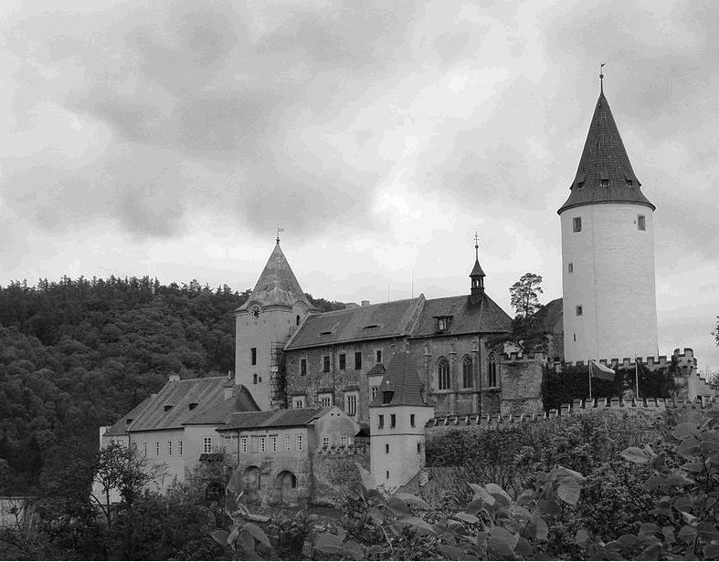B)
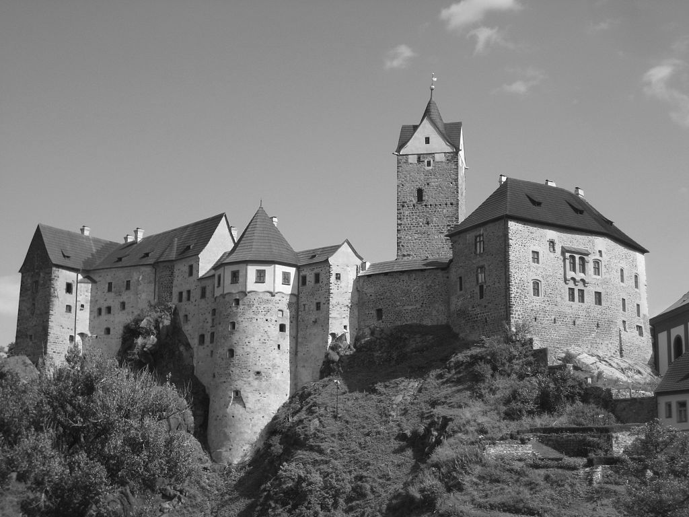C)
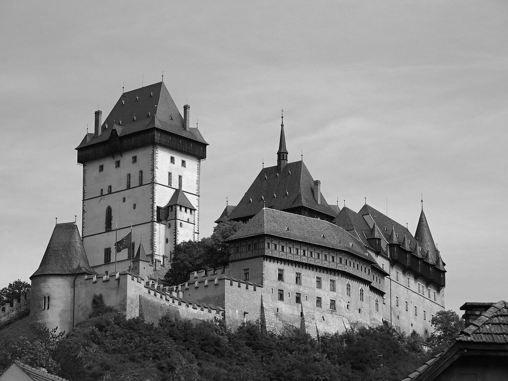D)
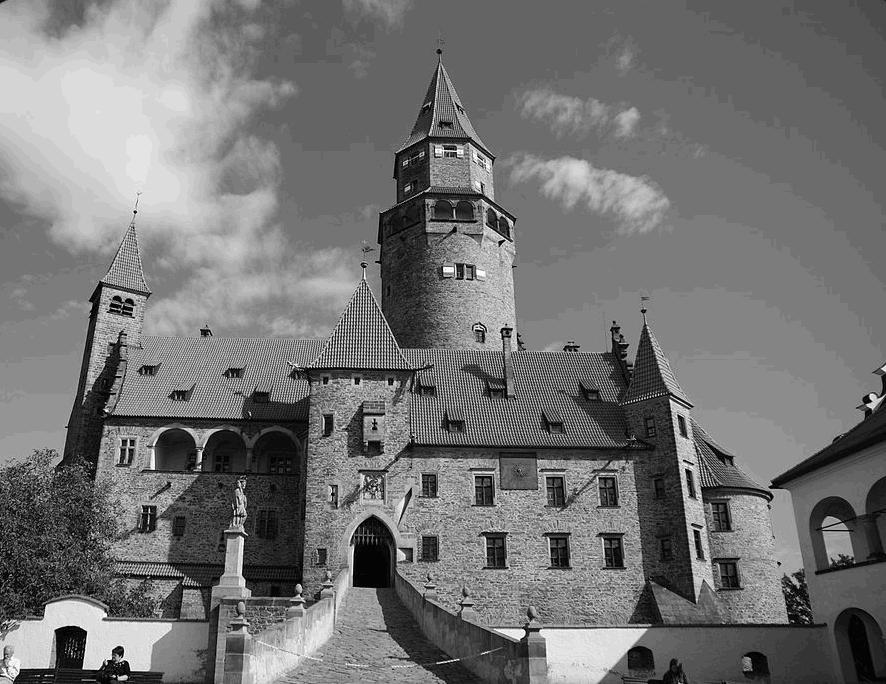 - Na kterém obrázku je socha svatého Václava v Praze na Václavském náměstí?
- Správná odpověď?Správná odpověď: D
- Zobrazit citaceCitace obrazového materiálu:
alternativa A
KADLEC, P. [online]. [cit. 2013-08-28]. Dostupný pod licencí Creative Commons na WWW: <http://commons.wikimedia.org/wiki/File:Jan_Zizka_Vitkov.jpg>
alternativa B
BJALEK, M. [online]. [cit. 2013-08-18]. Dostupný pod licencí Creative Commons na WWW: <http://commons.wikimedia.org/wiki/File:Pomn%C3%ADk_Ji%C5%99%C3%ADho_z_Pod%C4%9Bbrad.JPG>
alternativa C
RICHENZA. [online]. [cit. 2013-08-28]. Dostupný pod licencí Creative Commons na WWW: <http://commons.wikimedia.org/wiki/File:Franti%C5%A1kovy_L%C3%A1zn%C4%9B_1_149_(18).jpg>
alternativa D
TOSOVSKY, A. [online]. [cit. 2013-08-28]. Dostupný pod licencí Creative Commons na WWW: <http://commons.wikimedia.org/wiki/File:Wenceslaus_I_Duke_of_Bohemia_equestrian_statue_in_Prague_3.jpg> - Datum aktualizace testové úlohyDatum aktualizace testové úlohy: 20. 11. 2013
A)
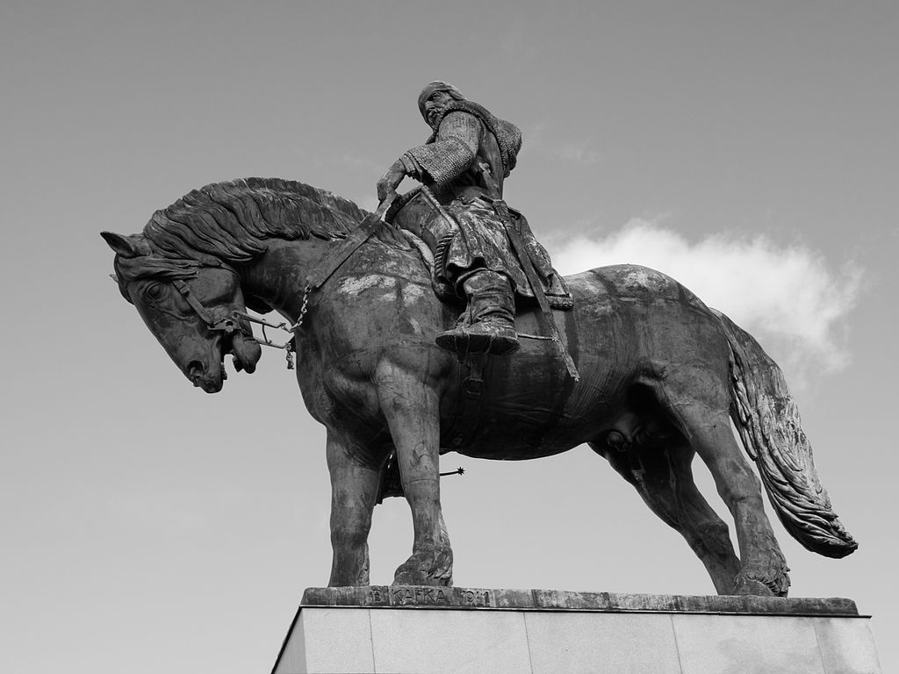B)
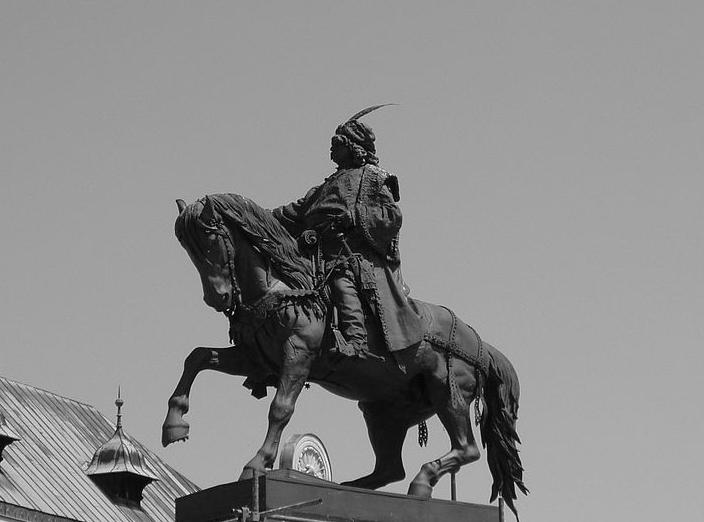C)
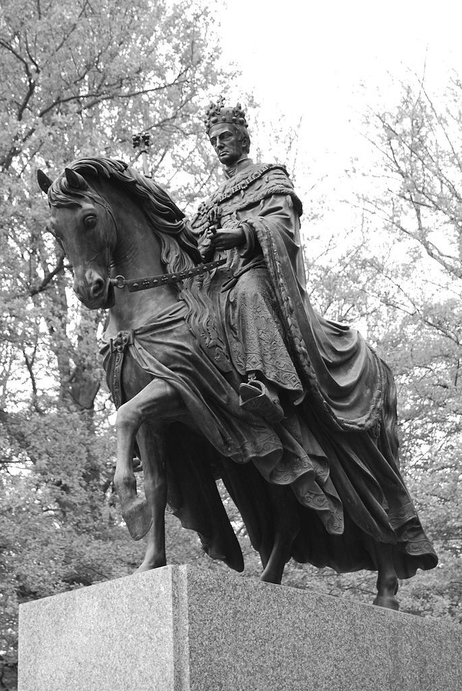D)
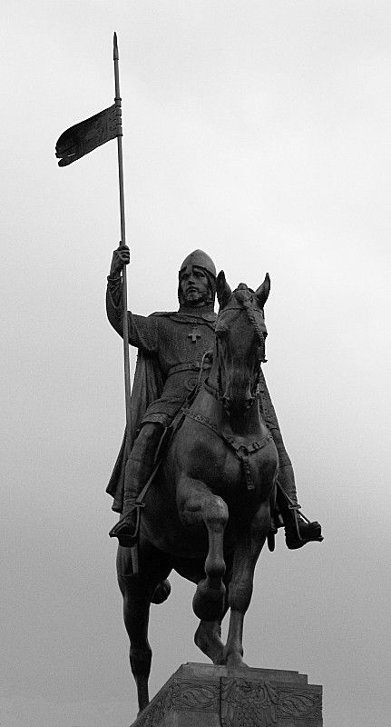 - Na kterém obrázku je gotický kostel svaté Barbory v Kutné Hoře?
- Správná odpověď?Správná odpověď: B
- Zobrazit citaceCitace obrazového materiálu:
alternativa A
ZÖRNER, P. E. [online]. [cit. 2013-08-23]. Dostupný pod licencí Creative Commons na WWW: <http://commons.wikimedia.org/wiki/File:Praha_2005-09-15_St_Nicholas.jpg>
alternativa B
MIAOW, M. [online]. [cit. 2013-08-16]. Dostupný pod licencí Creative Commons na WWW: <http://commons.wikimedia.org/wiki/File:Kutna_Hora_CZ_St_Barbara_Cathedral_front_view_01.JPG>
alternativa C
[online]. [cit. 2013-09-06]. Dostupný pod licencí Public domain na WWW: <http://commons.wikimedia.org/wiki/File:Praha_church_St_Ignace.JPG>
alternativa D
PRAZAK. [online]. [cit. 2013-08-23]. Dostupný pod licencí Creative Commons na WWW: <http://commons.wikimedia.org/wiki/File:Tismice_-_pr%C5%AF%C4%8Del%C3%AD_rom%C3%A1nsk%C3%A9_baziliky.jpg> - Datum aktualizace testové úlohyDatum aktualizace testové úlohy: 20. 11. 2013
A)
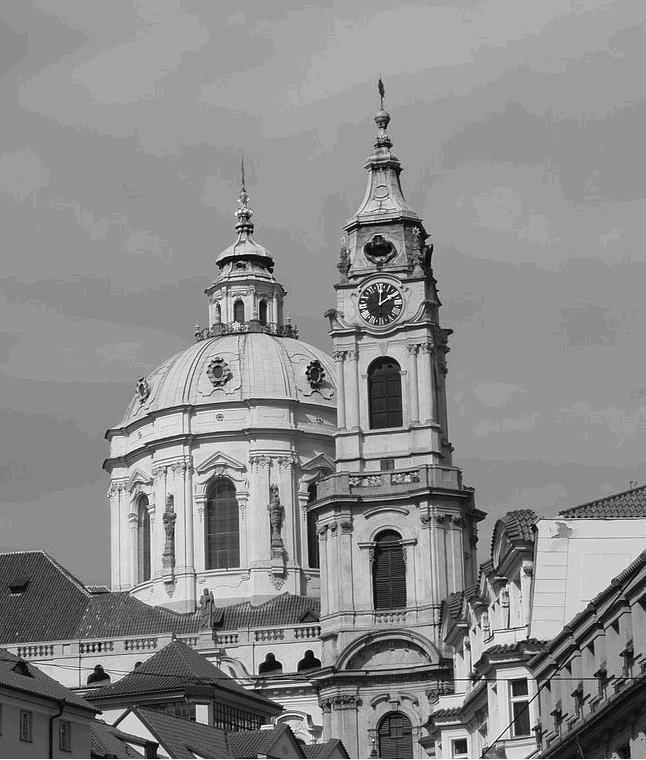B)
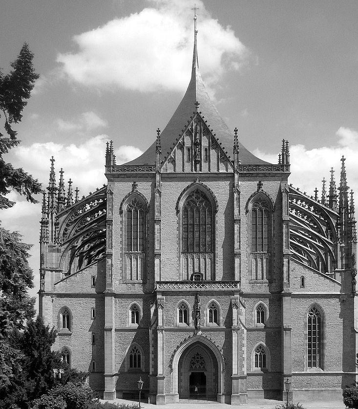C)
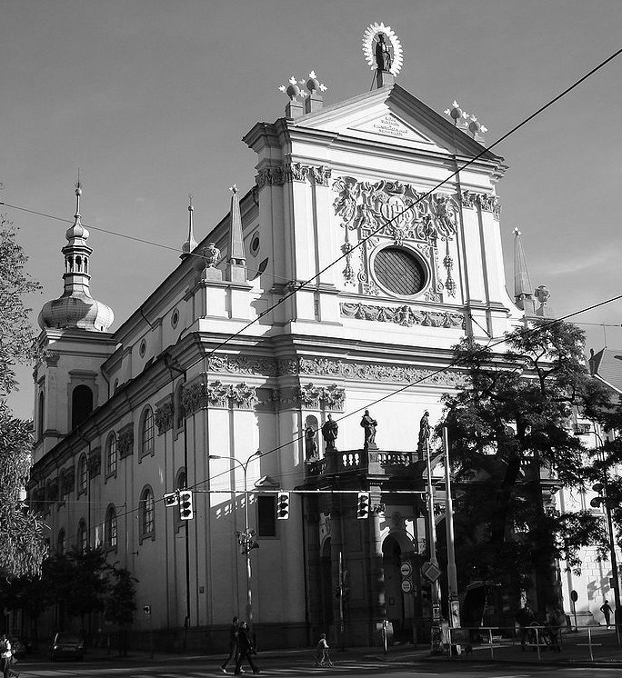D)
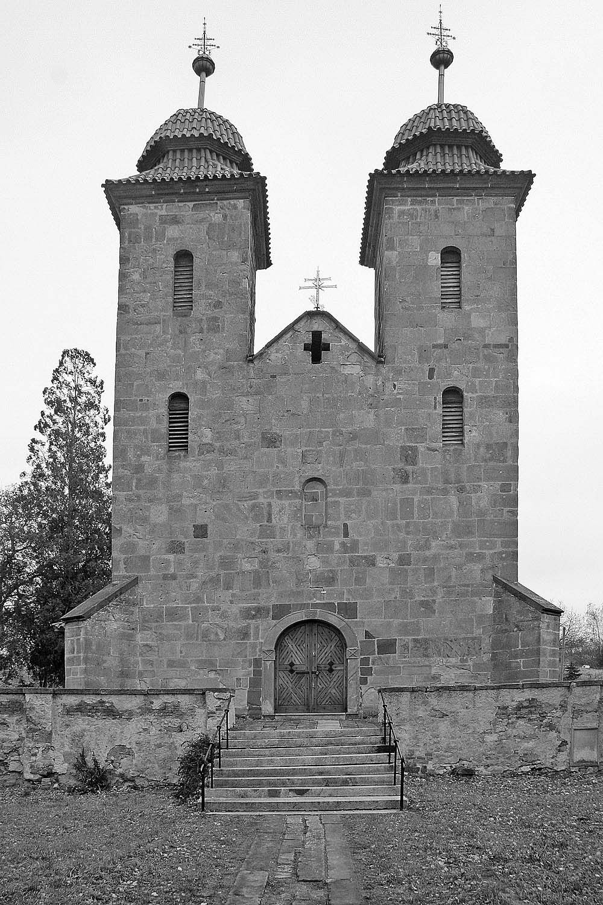 - Na kterém obrázku je barokní kostel svatého Mikuláše v Praze?
- Správná odpověď?Správná odpověď: D
- Zobrazit citaceCitace obrazového materiálu:
alternativa A
[online]. [cit. 2013-08-16]. Dostupný pod licencí Public domain na WWW: <http://commons.wikimedia.org/wiki/File:P.Marie_Snezna.jpg>
alternativa B
GROH, J. [online]. [cit. 2013-09-06]. Dostupný pod licencí Creative Commons na WWW: <http://commons.wikimedia.org/wiki/File:Povodn%C4%9B_v_Praze,_33.jpg>
alternativa C
LEHOTSKY. [online]. [cit. 2013-08-16]. Dostupný pod licencí Creative Commons na WWW: <http://commons.wikimedia.org/wiki/File:Vy%C5%A1ehrad_kostel.JPG>
alternativa D
MORAVEC, H. [online]. [cit. 2013-08-23]. Dostupný pod licencí Creative Commons na WWW: <http://commons.wikimedia.org/wiki/File:Mikulas_Mala_Strana_Prague_8349.JPG> - Datum aktualizace testové úlohyDatum aktualizace testové úlohy: 20. 11. 2013
A)
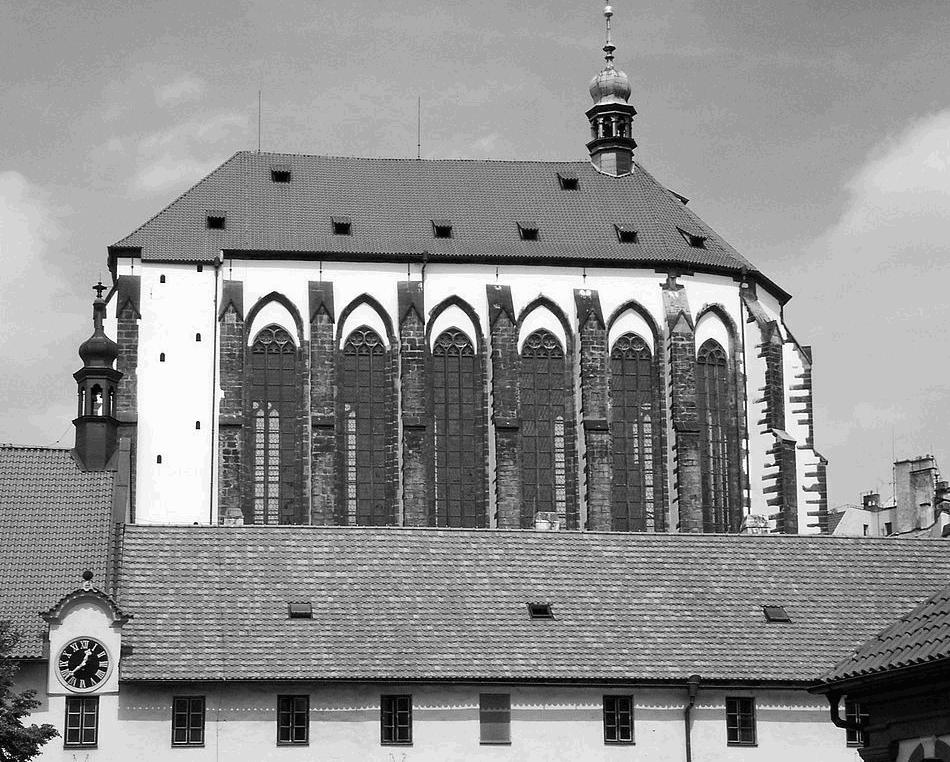B) C)
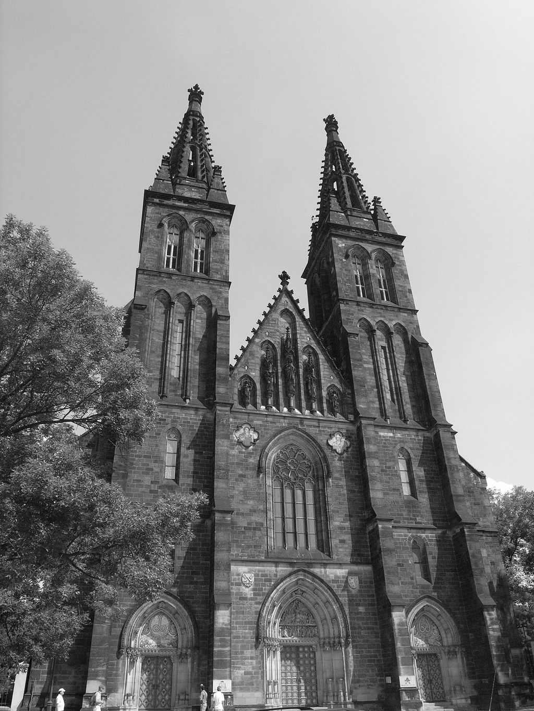D)
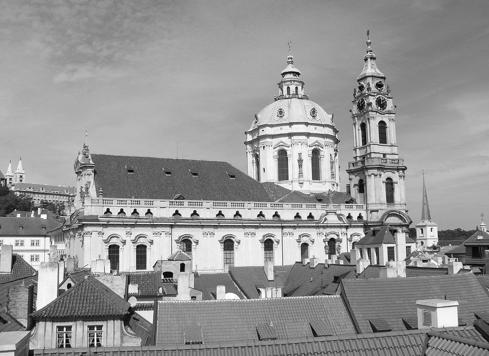 - Na obrázku je Karlův most. Kde se nachází tato stavba?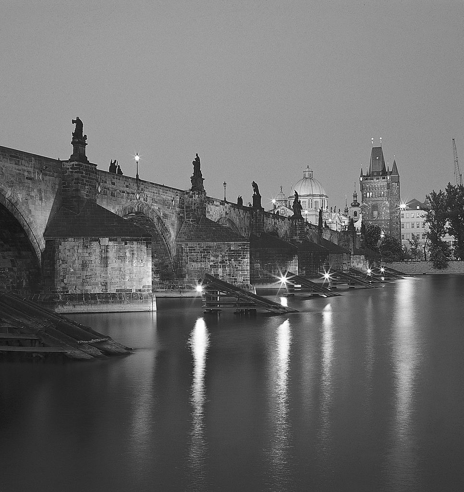
- A) V Brně.
- B) V Praze.
- C) V Ostravě.
- D) V Olomouci.
- Správná odpověď?Správná odpověď: B
- Zobrazit citaceCitace obrazového materiálu:
ESTEC. [online]. [cit. 2014-05-13]. Dostupný pod licencí Creative Commons na WWW: <http://commons.wikimedia.org/wiki/File:Prague_charles_bridge_night.jpg> - Datum aktualizace testové úlohyDatum aktualizace testové úlohy: 8. 12. 2014
- Na kterém obrázku je Český Krumlov, město plné významných památek?
- Správná odpověď?Správná odpověď: A
- Zobrazit citaceCitace obrazového materiálu:
alternativa A
H2K4. [online]. [cit. 2013-08-23]. Dostupný pod licencí Creative Commons na WWW: <http://commons.wikimedia.org/wiki/File:%C4%8Cesk%C3%BD_Krumlov,_z%C3%A1mek_%C4%8Cesk%C3%BD_Krumlov.JPG>
alternativa B
GROH, J. [online]. [cit. 2013-09-06]. Dostupný pod licencí Creative Commons na WWW: <http://commons.wikimedia.org/wiki/File:Povodn%C4%9B_v_Praze,_33.jpg>
alternativa C
AEPLI, N. [online]. [cit. 2013-08-16]. Dostupný pod licencí Creative Commons na WWW: <http://commons.wikimedia.org/wiki/File:Brno_View_from_Spilberk_131.JPG>
alternativa D
[online]. [cit. 2013-08-16]. Dostupný pod licencí Public domain na WWW: <http://commons.wikimedia.org/wiki/File:Litom%C4%9B%C5%99ice_Sv_%C5%A0t%C4%9Bp%C3%A1n_Edit.jpg> - Datum aktualizace testové úlohyDatum aktualizace testové úlohy: 20. 11. 2013
A) B) 
C)
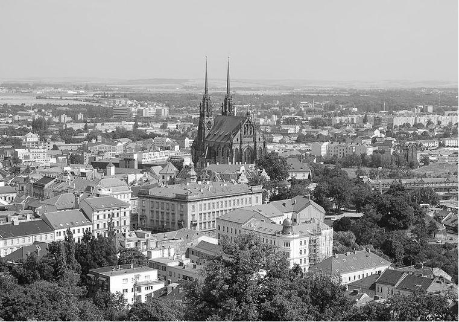D)
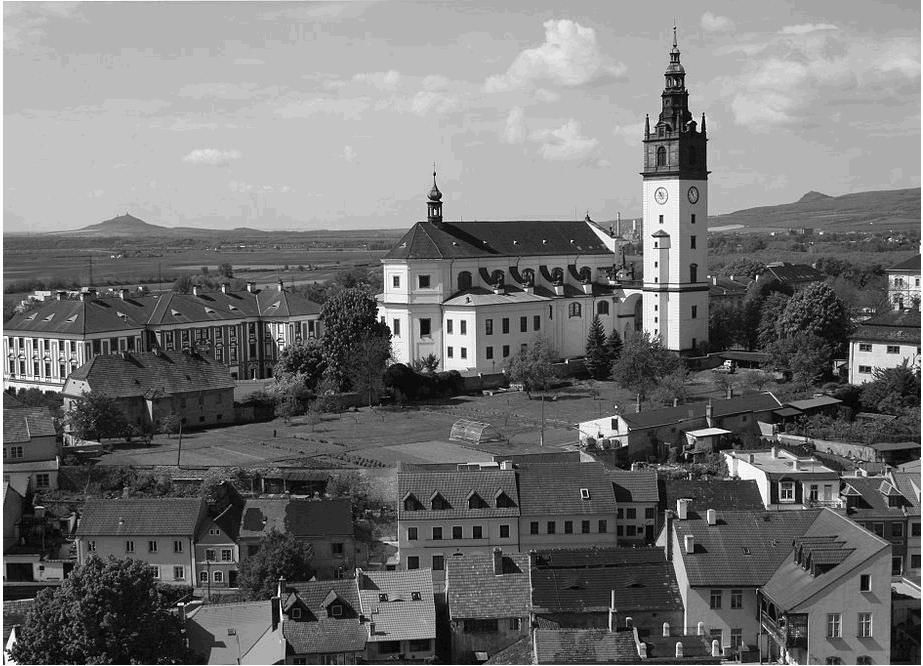 - Kdo je autorem této stavby a jaký je její účel?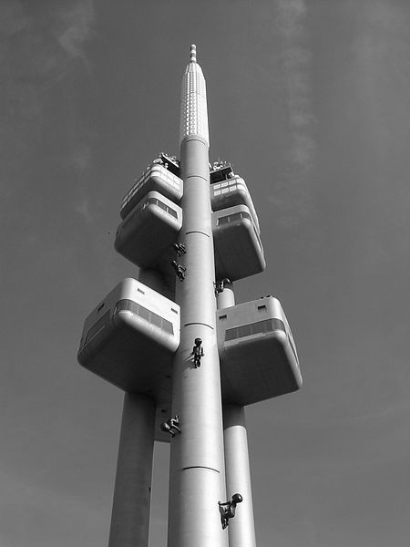
- A) Josef Gočár a kostel.
- B) Jan Kaplický a knihovna,
- C) Olbram Zoubek a pomník.
- D) Václav Aulický a televizní věž.
- Správná odpověď?Správná odpověď: D
- Zobrazit citaceCitace obrazového materiálu:
POŽÁR, N. [online]. [cit. 2014-05-13]. Dostupný pod licencí Creative Commons na WWW: <http://commons.wikimedia.org/wiki/File:%C5%BDi%C5%BEkov_tv_tower.jpg?uselang=cs> - Datum aktualizace testové úlohyDatum aktualizace testové úlohy: 8. 12. 2014